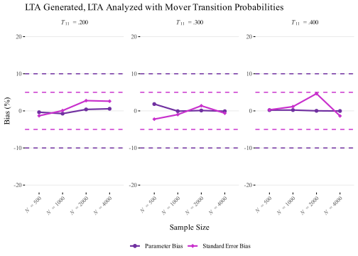
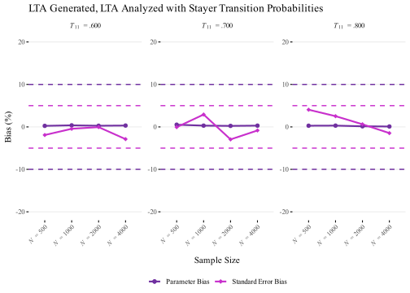

library(tidyverse)
library(MplusAutomation)
library(here)
library(gt)
library(janitor)
library(glue)
library(ggtext)
library(rlang)
library(knitr)
library(parallel)
library(tools)
library(webshot2)
library(flextable)
library(officer)Understanding the Performance of Random Intercepts Latent Transition Analysis (RI-LTA): A Monte Carlo Simulation Study using MplusAutomation
Study 1.1: LTA Generated, LTA Analyzed with Two Timepoints


Introduction
Study 1.1: LTA Generated, LTA Analyzed

Load Packages
Simulation
Part 1: Conduct Simulation
In this section, I am conducting a simulation where I am generating data as Latent Transition Analysis and analyzing it as Latent Transition Analysis to fully explore the model’s performance. The simulation consists of 24 conditions, combining four sample sizes (N = 500, 1000, 2000, 4000) with six transition probabilities linked to logits (betas; 1.385, .85, .41, -.41, -.85, -1.385), corresponding to probabilities of .8, .7, .6, .4, .3, and .2. These conditions are iterated over programmatically using MplusAutomation to set up and execute the models. To speed up the process, I employ parallel processing, which distributes computations across multiple CPU cores, enabling efficient completion of the simulations across all scenarios.
Conditions:
Sample Size: N = 500, 1000, 2000, 4000
Transition logit (Probability): TPs = 1.385 (.8), .85 (.7), .41 (.6), -.41 (.4), -.85 (.3), -1.385 (.2)

Setting up the Simulation Conditions
p1 <- expand.grid(N = c(500, 1000, 2000, 4000),
TPs = c(1.385, .85, .41, -.41, -.85, -1.385),
TH = c(1))
# Display the matrix using gt
p1 %>%
gt() %>%
tab_header(
title = "Simulation Conditions Matrix",
subtitle = "Combinations of Sample Sizes, Transition Probabilities, and Mixtures"
) %>%
cols_align(
align = "center",
columns = everything() # Centers all columns
)| Simulation Conditions Matrix | ||
|---|---|---|
| Combinations of Sample Sizes, Transition Probabilities, and Mixtures | ||
| N | TPs | TH |
| 500 | 1.385 | 1 |
| 1000 | 1.385 | 1 |
| 2000 | 1.385 | 1 |
| 4000 | 1.385 | 1 |
| 500 | 0.850 | 1 |
| 1000 | 0.850 | 1 |
| 2000 | 0.850 | 1 |
| 4000 | 0.850 | 1 |
| 500 | 0.410 | 1 |
| 1000 | 0.410 | 1 |
| 2000 | 0.410 | 1 |
| 4000 | 0.410 | 1 |
| 500 | -0.410 | 1 |
| 1000 | -0.410 | 1 |
| 2000 | -0.410 | 1 |
| 4000 | -0.410 | 1 |
| 500 | -0.850 | 1 |
| 1000 | -0.850 | 1 |
| 2000 | -0.850 | 1 |
| 4000 | -0.850 | 1 |
| 500 | -1.385 | 1 |
| 1000 | -1.385 | 1 |
| 2000 | -1.385 | 1 |
| 4000 | -1.385 | 1 |
Run Initial Simulation
Code
library(parallel)
# Step 1: Create the cluster for parallel processing
num_cores <- detectCores() - 1 # Detect the number of available cores (minus 1)
cl <- makeCluster(num_cores, type = "PSOCK") # Create the PSOCK cluster
# Step 2: Define the function for the simulation
lta_lta_func <- function(N, TPs, TH) {
LTA_LTA <- mplusObject(
TITLE = glue("Generate LTA_LTA_N_{N}_TP_{TPs}_{TH}"),
MONTECARLO =
glue("NAMES = u11-u15 u21-u25;
GENERATE = u11-u15 u21-u25(1);
CATEGORICAL = u11-u15 u21-u25;
GENCLASSES = c1(2) c2(2);
CLASSES = c1(2) c2(2);
NOBSERVATIONS = {N};
SEED = 07252005;
NREPS = 500;
!!SAVE = repM1*.dat;
RESULTS = LTA_LTA_N_{N}_TP_{TPs}_TH_{TH}.csv;"),
ANALYSIS =
"TYPE = MIXTURE;
processors = 24;
starts= 50 10;
logcriterion=0.00001;
mconv=0.00001;",
OUTPUT = "TECH9",
MODELPOPULATION = glue("
%OVERALL%
[c1#1-c2#1*0];
c2#1 on c1#1*{TPs};
MODEL POPULATION-c1:
%c1#1%
[u11$1*{TH} u12$1*{TH} u13$1*{TH} u14$1*{TH} u15$1*{TH}] (p111-p115);
%c1#2%
[u11$1*-{TH} u12$1*-{TH} u13$1*-{TH} u14$1*-{TH} u15$1*-{TH}] (p121-p125);
MODEL POPULATION-c2:
%c2#1%
[u21$1*{TH} u22$1*{TH} u23$1*{TH} u24$1*{TH} u25$1*{TH}] (p111-p115);
%c2#2%
[u21$1*-{TH} u22$1*-{TH} u23$1*-{TH} u24$1*-{TH} u25$1*-{TH}] (p121-p125);
"),
MODEL =
glue("
%OVERALL%
[c1#1-c2#1*0](par1-par2);
c2#1 on c1#1*{TPs} (par11);
MODEL c1:
%c1#1%
[u11$1*{TH} u12$1*{TH} u13$1*{TH} u14$1*{TH} u15$1*{TH}] (p111-p115);
%c1#2%
[u11$1*-{TH} u12$1*-{TH} u13$1*-{TH} u14$1*-{TH} u15$1*-{TH}] (p121-p125);
MODEL c2:
%c2#1%
[u21$1*{TH} u22$1*{TH} u23$1*{TH} u24$1*{TH} u25$1*{TH}] (p111-p115);
%c2#2%
[u21$1*-{TH} u22$1*-{TH} u23$1*-{TH} u24$1*-{TH} u25$1*-{TH}] (p121-p125);
"),
MODELCONSTRAINT =
if (TPs == 1.385) {
glue("
New(
trans11*.80 trans12*.20 trans21*.5 trans22*.5
prob11*.5 prob12*.5 prob21*.65 prob22*.35);
trans11 = 1/(1+exp(-(par2+par11)));
trans12 = 1-trans11;
trans21 = 1/(1+exp(-par2));
trans22 = 1- trans21;
!marginal probabilities at T1 and T2:
prob11 = 1/(1+exp(-par1));
prob12 = 1 - prob11;
prob21 = prob11*trans11+prob12*trans21;
prob22 = 1- prob21;
")
}
else if (TPs == .85) {
glue("
New(
trans11*.70 trans12*.30 trans21*.5 trans22*.5
prob11*.5 prob12*.5 prob21*.60 prob22*.4);
trans11 = 1/(1+exp(-(par2+par11)));
trans12 = 1-trans11;
trans21 = 1/(1+exp(-par2));
trans22 = 1- trans21;
!marginal probabilities at T1 and T2:
prob11 = 1/(1+exp(-par1));
prob12 = 1 - prob11;
prob21 = prob11*trans11+prob12*trans21;
prob22 = 1- prob21;
")
}
else if (TPs == .41) {
glue("
New(
trans11*.60 trans12*.40 trans21*.5 trans22*.5
prob11*.5 prob12*.5 prob21*.55 prob22*.45);
trans11 = 1/(1+exp(-(par2+par11)));
trans12 = 1-trans11;
trans21 = 1/(1+exp(-par2));
trans22 = 1- trans21;
!marginal probabilities at T1 and T2:
prob11 = 1/(1+exp(-par1));
prob12 = 1 - prob11;
prob21 = prob11*trans11+prob12*trans21;
prob22 = 1- prob21;
")
}
else if (TPs == -.41) {
glue("
New(
trans11*.40 trans12*.60 trans21*.5 trans22*.5
prob11*.5 prob12*.5 prob21*.45 prob22*.55);
trans11 = 1/(1+exp(-(par2+par11)));
trans12 = 1-trans11;
trans21 = 1/(1+exp(-par2));
trans22 = 1- trans21;
!marginal probabilities at T1 and T2:
prob11 = 1/(1+exp(-par1));
prob12 = 1 - prob11;
prob21 = prob11*trans11+prob12*trans21;
prob22 = 1- prob21;
")
}
else if (TPs == -.85) {
glue("
New(
trans11*.30 trans12*.70 trans21*.5 trans22*.5
prob11*.5 prob12*.5 prob21*.40 prob22*.60);
trans11 = 1/(1+exp(-(par2+par11)));
trans12 = 1-trans11;
trans21 = 1/(1+exp(-par2));
trans22 = 1- trans21;
!marginal probabilities at T1 and T2:
prob11 = 1/(1+exp(-par1));
prob12 = 1 - prob11;
prob21 = prob11*trans11+prob12*trans21;
prob22 = 1- prob21;
")
}
else if (TPs == -1.385) {
glue("
New(
trans11*.20 trans12*.80 trans21*.5 trans22*.5
prob11*.5 prob12*.5 prob21*.35 prob22*.65);
trans11 = 1/(1+exp(-(par2+par11)));
trans12 = 1-trans11;
trans21 = 1/(1+exp(-par2));
trans22 = 1- trans21;
!marginal probabilities at T1 and T2:
prob11 = 1/(1+exp(-par1));
prob12 = 1 - prob11;
prob21 = prob11*trans11+prob12*trans21;
prob22 = 1- prob21;")
}
)
# Run Mplus model
LTA_LTA_Model <- mplusModeler(LTA_LTA,
dataout = here('Simulations','STUDY_1', "2 Time Points", "1_2T_LTA_GEN_LTA_ANALYZED", glue("LTA_LTA_N_{N}_TP_{TPs}_TH_{TH}.dat")),
modelout = glue(here('Simulations', 'STUDY_1', "2 Time Points", "1_2T_LTA_GEN_LTA_ANALYZED", "LTA_LTA_N_{N}_TP_{TPs}_TH_{TH}.inp")),
check = TRUE, run = TRUE, hashfilename = FALSE)
return(LTA_LTA_Model)
}
# Step 3: Export necessary objects to the cluster
clusterExport(cl, c("lta_lta_func", "p1", "here", "glue", "mplusModeler", "mplusObject"))
# Ensure necessary libraries are loaded on each cluster node
clusterEvalQ(cl, {
library(MplusAutomation)
library(glue)
library(here)
})
# Step 4: Run the simulation in parallel using the cluster
result_list <- parLapply(cl, 1:nrow(p1), function(i) {
lta_lta_func(p1$N[i], p1$TPs[i], p1$TH[i])
})
# Step 5: Stop the cluster after the simulation
stopCluster(cl)Data Processing and Verification
Check for Label Switching and Errors
In this section: .csv files are first merged into a single data frame, from which specific parameters are extracted. Logit values are then converted to probabilities, and known class values are incorporated into the data frame. A subset of cases involving label switching is selected randomly and plotted for visual review. Output files are scanned for errors, which are subsequently merged back into the original data file. Additional columns derived from the file name are added, and the percentage of violations is calculated. Both errors and label switching violations are visually represented, and the total number of corrected replications is reported.
Scrape Mplus CSV Files
First, Load all CSV files and combine them into a single data frame.
# Step 1: Set the correct CSV directory
csv_directory <- here('Simulations', 'STUDY_1', '2 Time Points', '1_2T_LTA_GEN_LTA_ANALYZED')
# Step 2: Source the child document
source(here('Child_Docs', 'data_scraping.R'))
# Will populate combined_data dataframe in the global environmentSlice Data / Extract Parameters
Extract data from the appropriate rows from each 9-row chunk and prepare the data for further processing.
# Process the data using the child script
source(here('Child_Docs', 'step2_2t_LTA.R'))
final_combined_data <- final_combined_data %>%
mutate(
TRANS11 = as.numeric(TRANS11),
SE_11 = as.numeric(SE_11),
across(starts_with("Ec"), as.numeric), # Convert all Ec columns
ll_csv = as.numeric(ll_csv) # Convert Log-Likelihood values
)Wrangle Data
Convert the logits to probabilities and add the known actual values to each row.
# Step 3 and 4: Process the data and return results
source(here('Child_Docs', 'step_3.R'))
# The objects `final_data_with_actuals` and `violators` should now be in the global environmentGenerate Plots of Label Switching
Generate plots of randomly sampled violators for visual inspection using parallel processing.
# Set plot width and height
plot_width <- 8
plot_height <- 6
# Take a random sample of up to 250 violators (ensure not to exceed the total number of violators)
set.seed(123) # For reproducibility
sample_size <- min(nrow(violators), 250) # Handle cases where fewer than 250 violators exist
sampled_violators <- violators[sample(nrow(violators), sample_size), ]
# Define the function to create plots sequentially
plot_violator <- function(i) {
row_data <- sampled_violators[i, ]
# Extract the file name from the current row
file_name <- row_data$FileName
# Extract probability values for EC1 and EC2 (estimated probabilities) and AC1 and AC2 (actuals)
estimated_probabilities <- c(
as.numeric(row_data[c("Ec1u1", "Ec1u2", "Ec1u3", "Ec1u4", "Ec1u5")]),
as.numeric(row_data[c("Ec2u1", "Ec2u2", "Ec2u3", "Ec2u4", "Ec2u5")])
)
actual_values <- c(
as.numeric(row_data[c("Ac1u1", "Ac1u2", "Ac1u3", "Ac1u4", "Ac1u5")]),
as.numeric(row_data[c("Ac2u1", "Ac2u2", "Ac2u3", "Ac2u4", "Ac2u5")])
)
# Create labels for the legend with actual values directly from the dataset
labels <- c(
paste0("EC1: (", round(row_data$Ec1u1, 3), ", ", round(row_data$Ec1u2, 3), ", ", round(row_data$Ec1u3, 3), ", ", round(row_data$Ec1u4, 3), ", ", round(row_data$Ec1u5, 3), ")"),
paste0("EC2: (", round(row_data$Ec2u1, 3), ", ", round(row_data$Ec2u2, 3), ", ", round(row_data$Ec2u3, 3), ", ", round(row_data$Ec2u4, 3), ", ", round(row_data$Ec2u5, 3), ")"),
paste0("AC1: (", round(row_data$Ac1u1, 3), ", ", round(row_data$Ac1u2, 3), ", ", round(row_data$Ac1u3, 3), ", ", round(row_data$Ac1u4, 3), ", ", round(row_data$Ac1u5, 3), ")"),
paste0("AC2: (", round(row_data$Ac2u1, 3), ", ", round(row_data$Ac2u2, 3), ", ", round(row_data$Ac2u3, 3), ", ", round(row_data$Ac2u4, 3), ", ", round(row_data$Ac2u5, 3), ")")
)
# Step 6: Create a data frame for plotting
plot_data <- data.frame(
Items = rep(1:5, 4),
Probabilities = c(estimated_probabilities, actual_values),
Class = rep(labels, each = 5)
)
# Step 7: Create the plot with the file name in the title
p <- ggplot(plot_data, aes(x = Items, y = Probabilities, color = Class, group = Class)) +
geom_line(size = 1.2) +
geom_point(size = 3) +
labs(title = file_name, x = "Items", y = "Probabilities") + # Only the file name in the title
theme_minimal(base_size = 16) +
theme(panel.background = element_rect(fill = "white"),
plot.background = element_rect(fill = "white"),
plot.title = element_text(size = 14, hjust = 0.5)) + # Adjust title size and center
scale_color_manual(values = c(
"darkblue", "darkgreen", # EC1 and EC2 (Estimated Probabilities)
"lightblue", "lightgreen" # AC1 and AC2 (Actual Values)
))
ggsave(filename = file.path(here('Simulations', 'STUDY_1', "2 Time Points", "zViolator_Plots", "z2t_lta_lta_violator_plots", paste0("violator_plot_", i, "_", file_name, ".png"))),
plot = p, width = plot_width, height = plot_height)
}
# Apply the function to generate plots sequentially (without parallelization)
invisible(lapply(1:sample_size, plot_violator))PLot Non-Violators and inspect for False NEGATIVES
# Take a random sample of up to 250 non-violators
set.seed(123) # For reproducibility
non_violators <- filter(final_data_with_actuals, Any_Violation == 0)
sample_size_non_violators <- min(nrow(non_violators), 250)
sampled_non_violators <- non_violators[sample(nrow(non_violators), sample_size_non_violators), ]
# Define a function for non-violator plots
plot_non_violator <- function(i) {
row_data <- sampled_non_violators[i, ]
file_name <- row_data$FileName
estimated_probabilities <- c(
as.numeric(row_data[c("Ec1u1", "Ec1u2", "Ec1u3", "Ec1u4", "Ec1u5")]),
as.numeric(row_data[c("Ec2u1", "Ec2u2", "Ec2u3", "Ec2u4", "Ec2u5")])
)
actual_values <- c(
as.numeric(row_data[c("Ac1u1", "Ac1u2", "Ac1u3", "Ac1u4", "Ac1u5")]),
as.numeric(row_data[c("Ac2u1", "Ac2u2", "Ac2u3", "Ac2u4", "Ac2u5")])
)
labels <- c(
paste0("EC1: (", round(row_data$Ec1u1, 3), ", ", round(row_data$Ec1u2, 3), ", ", round(row_data$Ec1u3, 3), ", ", round(row_data$Ec1u4, 3), ", ", round(row_data$Ec1u5, 3), ")"),
paste0("EC2: (", round(row_data$Ec2u1, 3), ", ", round(row_data$Ec2u2, 3), ", ", round(row_data$Ec2u3, 3), ", ", round(row_data$Ec2u4, 3), ", ", round(row_data$Ec2u5, 3), ")"),
paste0("AC1: (", round(row_data$Ac1u1, 3), ", ", round(row_data$Ac1u2, 3), ", ", round(row_data$Ac1u3, 3), ", ", round(row_data$Ac1u4, 3), ", ", round(row_data$Ac1u5, 3), ")"),
paste0("AC2: (", round(row_data$Ac2u1, 3), ", ", round(row_data$Ac2u2, 3), ", ", round(row_data$Ac2u3, 3), ", ", round(row_data$Ac2u4, 3), ", ", round(row_data$Ac2u5, 3), ")")
)
plot_data <- data.frame(
Items = rep(1:5, 4),
Probabilities = c(estimated_probabilities, actual_values),
Class = rep(labels, each = 5)
)
p <- ggplot(plot_data, aes(x = Items, y = Probabilities, color = Class, group = Class)) +
geom_line(size = 1.2) +
geom_point(size = 3) +
labs(title = paste0(file_name, " (Non-Violator)"), x = "Items", y = "Probabilities") +
theme_minimal(base_size = 16) +
theme(panel.background = element_rect(fill = "white"),
plot.background = element_rect(fill = "white"),
plot.title = element_text(size = 14, hjust = 0.5)) +
scale_color_manual(values = c(
"darkblue", "darkgreen", # EC1 and EC2 (Estimated Probabilities)
"lightblue", "lightgreen" # AC1 and AC2 (Actual Values)
))
ggsave(filename = file.path(here('Simulations', 'STUDY_1', "2 Time Points", "zViolator_Plots", "z2t_lta_lta_non_violator_plots", paste0("non_violator_plot_", i, "_", file_name, ".png"))),
plot = p, width = plot_width, height = plot_height)
}
# Apply function to generate non-violator plots
invisible(lapply(1:sample_size_non_violators, plot_non_violator))Error Handling
Scrape for Errors
Scrape output files for errors
# Step 1: Set the correct output directory for .out files
output_folder <- here('Simulations', 'STUDY_1', '2 Time Points', '1_2T_LTA_GEN_LTA_ANALYZED')
# Step 2: Source the child document that processes .out files
source(here('Child_Docs', 'out_scraping.R'))
# ===================================================== #
# ✅ SECTION 1 Generate Replication Summary Table
# ===================================================== #
replication_summary_table <- replication_summary %>%
gt() %>%
tab_header(
title = "Replication Summary",
subtitle = paste0("Folder: ", output_folder)
) %>%
fmt_number(
columns = c("Total", "Replicated_Yes", "Replicated_No", "Error_Count"),
decimals = 0
) %>%
cols_label(
FileName = "File Name",
Total = "Total Replications",
Replicated_Yes = "LL Replicated",
Replicated_No = "LL Not Replicated",
Error_Count = "Errors"
) %>%
cols_align(
align = "center",
columns = everything()
) %>%
tab_options(
table.font.size = "small",
heading.title.font.size = "medium",
heading.subtitle.font.size = "small",
table.width = pct(80)
)
# Display the table
replication_summary_table| Replication Summary | ||||
|---|---|---|---|---|
| Folder: /Users/brucecarter/Library/CloudStorage/Box-Box/RILTAS/RILTA_SIMULATION_STUDY/Simulations/STUDY_1/2 Time Points/1_2T_LTA_GEN_LTA_ANALYZED | ||||
| File Name | Total Replications | LL Replicated | LL Not Replicated | Errors |
| lta_lta_n_1000_tp_-0.41_th_1.out | 500 | 500 | 0 | 0 |
| lta_lta_n_1000_tp_-0.85_th_1.out | 500 | 500 | 0 | 0 |
| lta_lta_n_1000_tp_-1.385_th_1.out | 500 | 500 | 0 | 0 |
| lta_lta_n_1000_tp_0.41_th_1.out | 500 | 500 | 0 | 0 |
| lta_lta_n_1000_tp_0.85_th_1.out | 500 | 500 | 0 | 0 |
| lta_lta_n_1000_tp_1.385_th_1.out | 500 | 500 | 0 | 0 |
| lta_lta_n_2000_tp_-0.41_th_1.out | 500 | 500 | 0 | 0 |
| lta_lta_n_2000_tp_-0.85_th_1.out | 500 | 500 | 0 | 0 |
| lta_lta_n_2000_tp_-1.385_th_1.out | 500 | 500 | 0 | 0 |
| lta_lta_n_2000_tp_0.41_th_1.out | 500 | 500 | 0 | 0 |
| lta_lta_n_2000_tp_0.85_th_1.out | 500 | 500 | 0 | 0 |
| lta_lta_n_2000_tp_1.385_th_1.out | 500 | 500 | 0 | 0 |
| lta_lta_n_4000_tp_-0.41_th_1.out | 500 | 500 | 0 | 0 |
| lta_lta_n_4000_tp_-0.85_th_1.out | 500 | 500 | 0 | 0 |
| lta_lta_n_4000_tp_-1.385_th_1.out | 500 | 500 | 0 | 0 |
| lta_lta_n_4000_tp_0.41_th_1.out | 500 | 500 | 0 | 0 |
| lta_lta_n_4000_tp_0.85_th_1.out | 500 | 500 | 0 | 0 |
| lta_lta_n_4000_tp_1.385_th_1.out | 500 | 500 | 0 | 0 |
| lta_lta_n_500_tp_-0.41_th_1.out | 500 | 500 | 0 | 0 |
| lta_lta_n_500_tp_-0.85_th_1.out | 500 | 500 | 0 | 0 |
| lta_lta_n_500_tp_-1.385_th_1.out | 500 | 500 | 0 | 0 |
| lta_lta_n_500_tp_0.41_th_1.out | 500 | 500 | 0 | 0 |
| lta_lta_n_500_tp_0.85_th_1.out | 500 | 500 | 0 | 0 |
| lta_lta_n_500_tp_1.385_th_1.out | 500 | 500 | 0 | 0 |
# ===================================================== #
# ✅ SECTION 2 Row Count Validation
# ===================================================== #
cat("Rows in final_data_with_actuals:", nrow(final_data_with_actuals), "\n")Rows in final_data_with_actuals: 12000 cat("Rows in final_results:", nrow(final_results), "\n")Rows in final_results: 12000 cat("Rows in replication_summary:", nrow(replication_summary), "\n")Rows in replication_summary: 24 print(if (any(replication_summary$LL_Not_Replicated > 0, na.rm = TRUE)) {
"⚠️ WARNING: Some LL values were NOT replicated! Check the Replication Summary table."
} else {
"✅ All LL values were successfully replicated."
})[1] "✅ All LL values were successfully replicated."all.equal(final_data_with_actuals$ll_csv, final_results$ll_out, tolerance = 1e-4)[1] TRUEMerge Errors with Main Data File
Combine error information with main data file
final_data_with_actuals <- final_data_with_actuals %>%
left_join(
final_results %>% select(FileName, Replication, ll_out, LL_Replicated, ErrorFlag),
by = c("FileName", "Replication")
) %>%
mutate(
Any_Violation = ifelse(is.na(Any_Violation), 0, Any_Violation),
ErrorFlag = ifelse(is.na(ErrorFlag), 0, ErrorFlag),
LL_Replicated = ifelse(LL_Replicated == "Yes", 1, 0), # ✅ Convert Yes/No to 1/0
# 🔹 Create a new True Violation column
True_Violation = case_when(
Any_Violation == 1 | ErrorFlag == 1 | LL_Replicated == 0 ~ 1, # ✅ At least one violation
TRUE ~ 0
)
)Visualize differences between ll_out and ll_csv
ll_check <- final_data_with_actuals %>%
mutate(diff = round(ll_out - ll_csv, 3)) %>% # Round before counting
count(diff)
ll_check_table <- ll_check %>%
gt() %>%
tab_header(
title = "LL Difference Summary",
subtitle = "Comparison of LL values between CSV and OUT files"
) %>%
cols_label(
diff = "LL Difference",
n = "Count"
) %>%
fmt_number(
columns = diff,
decimals = 3
) %>%
cols_align(
align = "center",
columns = everything()
) %>%
tab_options(
table.font.size = "small",
heading.title.font.size = "medium",
heading.subtitle.font.size = "small",
table.width = pct(50)
)
# Display the table
ll_check_table| LL Difference Summary | |
|---|---|
| Comparison of LL values between CSV and OUT files | |
| LL Difference | Count |
| −0.001 | 140 |
| 0.000 | 11710 |
| 0.001 | 150 |
Create DF of LL differences from .out and .csv files for inspection at the replication level
# Create a dataframe with only rows where ll_out and ll_csv differ
ll_mismatch <- final_data_with_actuals %>%
mutate(diff = round(ll_out - ll_csv, 3)) %>%
filter(diff != 0) %>%
select(FileName, Replication, ll_out, ll_csv, diff)Scrape File Name Components
Create Column Names from the file name
# Add new columns based on the information in the FileName and set factors
final_data_with_actuals <- final_data_with_actuals %>%
mutate(
# Extract the sample size (N) from the FileName with the correct values
N = case_when(
grepl("n_4000", FileName) ~ 4,
grepl("n_500", FileName) ~ 1,
grepl("n_1000", FileName) ~ 2,
grepl("n_2000", FileName) ~ 3,
TRUE ~ NA_integer_
),
# Map the TPs from the FileName to the appropriate Population labels
Population = case_when(
grepl("tp_1.385", FileName) ~ ".800",
grepl("tp_0.85", FileName) ~ ".700",
grepl("tp_0.41", FileName) ~ ".600",
grepl("tp_-0.41", FileName) ~ ".400",
grepl("tp_-0.85", FileName) ~ ".300",
grepl("tp_-1.385", FileName) ~ ".200",
TRUE ~ NA_character_
),
# Create the Transitions variable based on Population values
Transitions = case_when(
Population %in% c(".200", ".300", ".400") ~ 1, # Assign 1
Population %in% c(".600", ".700", ".800") ~ 2, # Assign 2
TRUE ~ NA_integer_
)
) %>%
# Convert columns to factors, ordering N_4000 first in the factor levels
mutate(
N = factor(N, levels = c(4, 1, 2, 3), labels = c("N = 4000", "N = 500", "N = 1000", "N = 2000")),
Population = factor(Population, levels = c(".800", ".700", ".600", ".400", ".300", ".200")),
Transitions = factor(Transitions, levels = c(1, 2), labels = c("Mover", "Stayer"))
)Calculate Violations
Calculate Violation Percentages per Condition
violation_summary <- final_data_with_actuals %>%
mutate(
N_numeric = as.numeric(gsub("N = ", "", as.character(N))),
N_numeric = ifelse(is.na(N_numeric), 0, N_numeric)
) %>%
group_by(FileName, Population, N, N_numeric) %>%
summarize(
Total_Rows = n(),
Total_Violations = sum(Any_Violation, na.rm = TRUE),
Total_Errors = sum(ErrorFlag, na.rm = TRUE),
Total_LL_Failures = sum(LL_Replicated == 0, na.rm = TRUE),
Total_True_Violations = sum(True_Violation, na.rm = TRUE),
Percentage_Violations = round((Total_Violations / Total_Rows) * 100, 1),
True_Violation_Perc = round((Total_True_Violations / Total_Rows) * 100, 1),
ErrorRate = round((Total_Errors / Total_Rows) * 100, 1),
LL_Failure_Perc = round((Total_LL_Failures / Total_Rows) * 100, 1),
.groups = "drop"
) %>%
mutate(
Additional_Runs = (500 + Total_Violations) * (Percentage_Violations / 100),
Replications_Needed = ceiling(500 + Total_Violations + Additional_Runs + 20),
Replications_Needed = if_else(Replications_Needed < 500, 500, Replications_Needed),
Adjusted_Replications_Needed = ceiling(Replications_Needed / (1 - ErrorRate / 100)), #+ 100,
Adjusted_Replications_Needed = if_else(Adjusted_Replications_Needed < 500, 500, Adjusted_Replications_Needed),
TPs = case_when(
Population == ".800" ~ 1.385,
Population == ".700" ~ 0.85,
Population == ".600" ~ 0.41,
Population == ".400" ~ -0.41,
Population == ".300" ~ -0.85,
Population == ".200" ~ -1.385,
TRUE ~ NA_real_
)
) %>%
arrange(factor(N_numeric, levels = c(500, 1000, 2000, 4000)), as.numeric(Population)) %>%
mutate(
N = factor(N, levels = c("N = 500", "N = 1000", "N = 2000", "N = 4000")),
Population = factor(Population, levels = c(".200", ".300", ".400", ".600", ".700", ".800"))
) %>%
select(
N, N_numeric, Population, TPs,
Total_Rows,
Total_Violations, Percentage_Violations,
Total_Errors, ErrorRate,
Total_LL_Failures, LL_Failure_Perc,
Total_True_Violations, True_Violation_Perc,
Replications_Needed, Adjusted_Replications_Needed
) %>%
arrange(N_numeric, Population) %>%
mutate(N_numeric = trimws(as.numeric(N_numeric)))Create APA Flextable of Label Switching, Errors, and Replications Needed for PART 2
create_flextable <- function(data) {
# Ensure only the required columns are used
data <- data %>%
select(
N_numeric,
Population,
Total_Violations,
Percentage_Violations,
Total_Errors,
ErrorRate,
Total_LL_Failures,
LL_Failure_Perc,
Total_True_Violations,
True_Violation_Perc,
Replications_Needed,
Adjusted_Replications_Needed
) %>%
as.data.frame() # Ensures proper structure before passing to flextable
# Create the flextable
ft <- flextable(data) %>%
set_header_labels(
N_numeric = "N",
Population = "T₁₁", # Column remains "Population"
Total_Violations = "V",
Percentage_Violations = "V %",
Total_Errors = "\u03B5", # Epsilon
ErrorRate = "\u03B5 %",
Total_LL_Failures = "\u2112\u2097", # ℒₗ
LL_Failure_Perc = "\u2112\u2097 %", # ℒₗ%
Total_True_Violations = "\u03C4\u1D65", # Tau subscript v (𝜏ᵥ)
True_Violation_Perc = "\u03C4\u1D65 %",
Replications_Needed = "Reps Req’d",
Adjusted_Replications_Needed = "\u2206 Reps Req’d" # Delta Symbol
)
# Apply special formatting to headers
ft <- compose(ft, part = "header", j = "N_numeric", value = as_paragraph(as_i("N")))
ft <- compose(ft, part = "header", j = "Population", value = as_paragraph(as_i("T"), as_sub("11")))
# 🔹 Label Switching Violations
ft <- compose(ft, part = "header", j = "Total_Violations", value = as_paragraph(as_i("V")))
ft <- compose(ft, part = "header", j = "Percentage_Violations", value = as_paragraph(as_i("V"), "%"))
# 🔹 Mplus Errors
ft <- compose(ft, part = "header", j = "Total_Errors", value = as_paragraph(as_i("\u03B5")))
ft <- compose(ft, part = "header", j = "ErrorRate", value = as_paragraph(as_i("\u03B5"), "%"))
# 🔹 NEW: LL Replication Failures (ℒₗ)
ft <- compose(ft, part = "header", j = "Total_LL_Failures", value = as_paragraph(as_i("\u2112"), as_sub("ₗ")))
ft <- compose(ft, part = "header", j = "LL_Failure_Perc", value = as_paragraph(as_i("\u2112"), as_sub("ₗ"), "%"))
# 🔹 True Violations (𝜏ᵥ)
ft <- compose(ft, part = "header", j = "Total_True_Violations", value = as_paragraph(as_i("\u03C4"), as_sub(as_i("v"))))
ft <- compose(ft, part = "header", j = "True_Violation_Perc", value = as_paragraph(as_i("\u03C4"), as_sub(as_i("v")), "%"))
# 🔹 Replication Counts
ft <- compose(ft, part = "header", j = "Replications_Needed", value = as_paragraph(as_i("Reps"), "\n", "Req'd"))
ft <- compose(ft, part = "header", j = "Adjusted_Replications_Needed", value = as_paragraph(as_i("\u2206"), "\n", as_i("Reps"), "\n", "Req'd"))
# Apply width settings
ft <- width(ft, j = "N_numeric", width = 1.0)
ft <- width(ft, j = "Population", width = 0.6)
ft <- width(ft, j = "Total_Violations", width = 0.6)
ft <- width(ft, j = "Percentage_Violations", width = 0.6)
ft <- width(ft, j = "Total_Errors", width = 0.5)
ft <- width(ft, j = "ErrorRate", width = 0.5)
ft <- width(ft, j = "Total_LL_Failures", width = 0.5)
ft <- width(ft, j = "LL_Failure_Perc", width = 0.5)
ft <- width(ft, j = "Total_True_Violations", width = 0.6)
ft <- width(ft, j = "True_Violation_Perc", width = 0.6)
ft <- width(ft, j = "Replications_Needed", width = 0.6)
ft <- width(ft, j = "Adjusted_Replications_Needed", width = 0.6)
ft <- colformat_num(
ft,
j = c("Percentage_Violations", "ErrorRate", "LL_Failure_Perc", "True_Violation_Perc" ),
suffix = "%" # ✅ Adds percentage symbol
)
# Add padding below the subheaders
#ft <- ft %>%
# padding(part = "header", padding = c(0, 0, 6, 0)) # Adjust as needed for top, right, bottom, and left padding
# Enable autofit
ft <- set_table_properties(ft, layout = "fixed")
# Center all cells
ft <- align(ft, align = "center", part = "all")
# Align header text at the bottom of the cells
#ft <- valign(ft, part = "header", valign = "bottom")
# Merge vertically identical rows in the "N_numeric" column
ft <- merge_v(ft, j = "N_numeric")
# Apply font to the entire table
ft <- font(ft, fontname = "Avenir Next LT Pro", part = "all")
ft <- compose(
ft,
part = "body",
j = "N_numeric",
i = ~ !duplicated(N_numeric),
value = as_paragraph(
as_i("N"),
" =\u2009", # THIN SPACE (Unicode U+2009)
as.character(format(N_numeric, big.mark = ",", scientific = FALSE)) # Keeps proper formatting
)
)
# Add subheader row
ft <- add_header_row(
ft,
values = c("N Reps = 500", "Violations", "Errors", "LL Replication", "True Violations", "Adjustments"),
colwidths = c(2, 2, 2, 2, 2, 2)
)
# Define a transparent border
no_border <- fp_border(color = "transparent", width = 0)
# **Remove ONLY the bottom border under the first three columns (the blank subheader)**
ft <- hline(ft, i = 1, j = 1:2, border = no_border, part = "header")
# Adding color with a correct method
total_rows <- nrow(data) # Get the total number of rows in your data
color_rows <- rep(FALSE, total_rows) # Initialize a logical vector for coloring rows
for (i in seq(1, total_rows, by = 12)) {
color_rows[i:(i+5)] <- TRUE # Apply color to every 6 rows
}
# Apply background color with a lighter shade of gray
ft <- bg(ft, i = color_rows, bg = "#f0f0f0", part = "body")
return(ft)
}
# Generate formatted flextables for each subset
violation_summary_table <- create_flextable(violation_summary)
violation_summary_tableN Reps = 500 | Violations | Errors | LL Replication | True Violations | Adjustments | ||||||
|---|---|---|---|---|---|---|---|---|---|---|---|
N | T11 | V | V% | ε | ε% | ℒₗ | ℒₗ% | τv | τv% | Reps | ∆ |
N = 500 | .200 | 133 | 26.6% | 0 | 0% | 0 | 0% | 133 | 26.6% | 822 | 822 |
.300 | 119 | 23.8% | 0 | 0% | 0 | 0% | 119 | 23.8% | 787 | 787 | |
.400 | 110 | 22.0% | 0 | 0% | 0 | 0% | 110 | 22.0% | 765 | 765 | |
.600 | 128 | 25.6% | 0 | 0% | 0 | 0% | 128 | 25.6% | 809 | 809 | |
.700 | 109 | 21.8% | 0 | 0% | 0 | 0% | 109 | 21.8% | 762 | 762 | |
.800 | 84 | 16.8% | 0 | 0% | 0 | 0% | 84 | 16.8% | 703 | 703 | |
N = 1000 | .200 | 125 | 25.0% | 0 | 0% | 0 | 0% | 125 | 25.0% | 802 | 802 |
.300 | 112 | 22.4% | 0 | 0% | 0 | 0% | 112 | 22.4% | 770 | 770 | |
.400 | 112 | 22.4% | 0 | 0% | 0 | 0% | 112 | 22.4% | 770 | 770 | |
.600 | 128 | 25.6% | 0 | 0% | 0 | 0% | 128 | 25.6% | 809 | 809 | |
.700 | 98 | 19.6% | 0 | 0% | 0 | 0% | 98 | 19.6% | 736 | 736 | |
.800 | 84 | 16.8% | 0 | 0% | 0 | 0% | 84 | 16.8% | 703 | 703 | |
N = 2000 | .200 | 146 | 29.2% | 0 | 0% | 0 | 0% | 146 | 29.2% | 855 | 855 |
.300 | 96 | 19.2% | 0 | 0% | 0 | 0% | 96 | 19.2% | 731 | 731 | |
.400 | 92 | 18.4% | 0 | 0% | 0 | 0% | 92 | 18.4% | 721 | 721 | |
.600 | 108 | 21.6% | 0 | 0% | 0 | 0% | 108 | 21.6% | 760 | 760 | |
.700 | 110 | 22.0% | 0 | 0% | 0 | 0% | 110 | 22.0% | 765 | 765 | |
.800 | 74 | 14.8% | 0 | 0% | 0 | 0% | 74 | 14.8% | 679 | 679 | |
N = 4000 | .200 | 97 | 19.4% | 0 | 0% | 0 | 0% | 97 | 19.4% | 733 | 733 |
.300 | 90 | 18.0% | 0 | 0% | 0 | 0% | 90 | 18.0% | 717 | 717 | |
.400 | 91 | 18.2% | 0 | 0% | 0 | 0% | 91 | 18.2% | 719 | 719 | |
.600 | 129 | 25.8% | 0 | 0% | 0 | 0% | 129 | 25.8% | 812 | 812 | |
.700 | 120 | 24.0% | 0 | 0% | 0 | 0% | 120 | 24.0% | 789 | 789 | |
.800 | 76 | 15.2% | 0 | 0% | 0 | 0% | 76 | 15.2% | 684 | 684 | |
Save Tables
invisible(save_as_image(violation_summary_table, path = here('Simulations', 'STUDY_1', "2 Time Points", "zErrors", "l_l_e&v_1.svg"))
)PART 2 Re-Run Simulations
Re-Run Simulation with Dynamic Replication Conditions
Code
# Define the Mplus object with the dynamic replications
lta_lta_func <- function(N_numeric, TPs, Replications_Needed) {
# Manually construct the MONTECARLO section with dynamic NREPS
montecarlo_section <- glue("
NAMES = u11-u15 u21-u25;
GENERATE = u11-u15 u21-u25(1);
CATEGORICAL = u11-u15 u21-u25;
GENCLASSES = c1(2) c2(2);
CLASSES = c1(2) c2(2);
NOBSERVATIONS = {N_numeric};
SEED = 07252005;
NREPS = {Replications_Needed}; ! Dynamic number of replications
!!SAVE = repM1*.dat;
RESULTS = LTA_LTA_N_{N_numeric}_TP_{TPs}_TH_1.csv;
")
# Define the Mplus model using MplusAutomation, using glue for the content
LTA_LTA <- mplusObject(
TITLE = glue("Generate LTA_LTA_N_{N_numeric}_TP_{TPs}_TH_1;"),
MONTECARLO = montecarlo_section, # Use the dynamically constructed MONTECARLO section
ANALYSIS =
"TYPE = MIXTURE;
processors = 24;
starts= 50 10;
logcriterion=0.00001;
mconv=0.00001;",
OUTPUT = "TECH9",
MODELPOPULATION = glue("
%OVERALL%
[c1#1-c2#1*0];
c2#1 on c1#1*{TPs};
MODEL POPULATION-c1:
%c1#1%
[u11$1*1 u12$1*1 u13$1*1 u14$1*1 u15$1*1] (p111-p115);
%c1#2%
[u11$1*-1 u12$1*-1 u13$1*-1 u14$1*-1 u15$1*-1] (p121-p125);
MODEL POPULATION-c2:
%c2#1%
[u21$1*1 u22$1*1 u23$1*1 u24$1*1 u25$1*1] (p111-p115);
%c2#2%
[u21$1*-1 u22$1*-1 u23$1*-1 u24$1*-1 u25$1*-1] (p121-p125);
"),
MODEL =
glue("
%OVERALL%
[c1#1-c2#1*0](par1-par2);
c2#1 on c1#1*{TPs} (par11);
MODEL c1:
%c1#1%
[u11$1*1 u12$1*1 u13$1*1 u14$1*1 u15$1*1] (p111-p115);
%c1#2%
[u11$1*-1 u12$1*-1 u13$1*-1 u14$1*-1 u15$1*-1] (p121-p125);
MODEL c2:
%c2#1%
[u21$1*1 u22$1*1 u23$1*1 u24$1*1 u25$1*1] (p111-p115);
%c2#2%
[u21$1*-1 u22$1*-1 u23$1*-1 u24$1*-1 u25$1*-1] (p121-p125);
"),
MODELCONSTRAINT = if (TPs == 1.385) {
glue("
New(trans11*.80 trans12*.20 trans21*.5 trans22*.5
prob11*.5 prob12*.5 prob21*.65 prob22*.35);
trans11 = 1/(1+exp(-(par2+par11)));
trans12 = 1-trans11;
trans21 = 1/(1+exp(-par2));
trans22 = 1-trans21;
prob11 = 1/(1+exp(-par1));
prob12 = 1 - prob11;
prob21 = prob11*trans11 + prob12*trans21;
prob22 = 1- prob21;
")
} else if (TPs == .85) {
glue("
New(trans11*.70 trans12*.30 trans21*.5 trans22*.5
prob11*.5 prob12*.5 prob21*.60 prob22*.40);
trans11 = 1/(1+exp(-(par2+par11)));
trans12 = 1-trans11;
trans21 = 1/(1+exp(-par2));
trans22 = 1-trans21;
prob11 = 1/(1+exp(-par1));
prob12 = 1 - prob11;
prob21 = prob11*trans11 + prob12*trans21;
prob22 = 1- prob21;
")
} else if (TPs == .41) {
glue("
New(trans11*.60 trans12*.40 trans21*.5 trans22*.5
prob11*.5 prob12*.5 prob21*.55 prob22*.45);
trans11 = 1/(1+exp(-(par2+par11)));
trans12 = 1-trans11;
trans21 = 1/(1+exp(-par2));
trans22 = 1-trans21;
prob11 = 1/(1+exp(-par1));
prob12 = 1 - prob11;
prob21 = prob11*trans11 + prob12*trans21;
prob22 = 1- prob21;
")
} else if (TPs == -.41) {
glue("
New(trans11*.40 trans12*.60 trans21*.5 trans22*.5
prob11*.5 prob12*.5 prob21*.45 prob22*.55);
trans11 = 1/(1+exp(-(par2+par11)));
trans12 = 1-trans11;
trans21 = 1/(1+exp(-par2));
trans22 = 1-trans21;
prob11 = 1/(1+exp(-par1));
prob12 = 1 - prob11;
prob21 = prob11*trans11 + prob12*trans21;
prob22 = 1- prob21;
")
} else if (TPs == -.85) {
glue("
New(trans11*.30 trans12*.70 trans21*.5 trans22*.5
prob11*.5 prob12*.5 prob21*.40 prob22*.60);
trans11 = 1/(1+exp(-(par2+par11)));
trans12 = 1-trans11;
trans21 = 1/(1+exp(-par2));
trans22 = 1-trans21;
prob11 = 1/(1+exp(-par1));
prob12 = 1 - prob11;
prob21 = prob11*trans11 + prob12*trans21;
prob22 = 1- prob21;
")
} else if (TPs == -1.385) {
glue("
New(trans11*.20 trans12*.80 trans21*.5 trans22*.5
prob11*.5 prob12*.5 prob21*.35 prob22*.65);
trans11 = 1/(1+exp(-(par2+par11)));
trans12 = 1-trans11;
trans21 = 1/(1+exp(-par2));
trans22 = 1-trans21;
prob11 = 1/(1+exp(-par1));
prob12 = 1 - prob11;
prob21 = prob11*trans11 + prob12*trans21;
prob22 = 1- prob21;
")
}
)
# Run the Mplus model using MplusAutomation
LTA_LTA_Model <- mplusModeler(LTA_LTA,
dataout = here('Simulations', 'STUDY_1', "2 Time Points", "1_2T_LTA_GEN_LTA_ANALYZED_REP", glue("LTA_LTA_N_{N_numeric}_TP_{TPs}_TH_1.dat")),
modelout = here('Simulations', 'STUDY_1', "2 Time Points", "1_2T_LTA_GEN_LTA_ANALYZED_REP", glue("LTA_LTA_N_{N_numeric}_TP_{TPs}_TH_1.inp")),
run = 1, check = TRUE)
return(LTA_LTA_Model)
}
library(parallel)
# Start the cluster
num_cores <- detectCores() - 1
# Step 2: Select the cluster type based on the system (PSOCK for Windows, FORK for macOS/Linux)
cluster_type <- ifelse(.Platform$OS.type == "windows", "PSOCK", "FORK")
cl <- makeCluster(num_cores, type = cluster_type)
# Export necessary objects to the cluster
clusterExport(cl, c("lta_lta_func", "violation_summary", "here", "glue", "mplusModeler", "mplusObject"))
# Ensure required libraries are loaded on each node
clusterEvalQ(cl, {
library(MplusAutomation)
library(glue)
library(here)
})
result_list <- parLapply(cl, 1:nrow(violation_summary), function(i) {
lta_lta_func(
violation_summary$N_numeric[i],
violation_summary$TPs[i],
violation_summary$Replications_Needed[i]
)
})
# Stop the cluster after the simulation
stopCluster(cl)Check for Label Switching and Errors - Part 2
In this section: we re conduct the steps for aggregating the label switching and errors to guarantee that we will have at minimum 500 replications per condition.
Load all CSV files and combine them into a single data frame.
# Step 1: Set the correct CSV directory
csv_directory <- here('Simulations', 'STUDY_1', '2 Time Points', '1_2T_LTA_GEN_LTA_ANALYZED_REP')
# Step 2: Source the child document
source(here('Child_Docs', 'data_scraping.R'))
# Will populate combine_data data frame in the global environment Extract data from the appropriate rows from each 9-row chunk and prepare the data for further processing.
# Step 2: Process the data using the child script
source(here('Child_Docs', 'step2_2t_LTA.R'))
# Will populate final_combined data in global environment
final_combined_data <- final_combined_data %>%
mutate(
TRANS11 = as.numeric(TRANS11),
SE_11 = as.numeric(SE_11),
across(starts_with("Ec"), as.numeric), # Convert all Ec columns
ll_csv = as.numeric(ll_csv) # Convert Log-Likelihood values
)Convert the logits to probabilities and add the known actual values to each row.
# Step 3: Process the data and return results
source(here('Child_Docs', 'step_3.R'))
# The objects `final_data_with_actuals` and `violators` should now be in the global environmentScrape Output Files for Errors
# Step 1: Set the correct output directory for .out files
output_folder <- here('Simulations', 'STUDY_1', '2 Time Points', '1_2T_LTA_GEN_LTA_ANALYZED_REP')
# Step 2: Source the child document that processes .out files
source(here('Child_Docs', 'out_scraping.R'))
# ===================================================== #
# ✅ SECTION 1 Generate Replication Summary Table
# ===================================================== #
replication_summary_table <- replication_summary %>%
gt() %>%
tab_header(
title = "Replication Summary",
subtitle = paste0("Folder: ", output_folder)
) %>%
fmt_number(
columns = c("Total", "Replicated_Yes", "Replicated_No", "Error_Count"),
decimals = 0
) %>%
cols_label(
FileName = "File Name",
Total = "Total Replications",
Replicated_Yes = "LL Replicated",
Replicated_No = "LL Not Replicated",
Error_Count = "Errors"
) %>%
cols_align(
align = "center",
columns = everything()
) %>%
tab_options(
table.font.size = "small",
heading.title.font.size = "medium",
heading.subtitle.font.size = "small",
table.width = pct(80)
)
# Display the table
replication_summary_table| Replication Summary | ||||
|---|---|---|---|---|
| Folder: /Users/brucecarter/Library/CloudStorage/Box-Box/RILTAS/RILTA_SIMULATION_STUDY/Simulations/STUDY_1/2 Time Points/1_2T_LTA_GEN_LTA_ANALYZED_REP | ||||
| File Name | Total Replications | LL Replicated | LL Not Replicated | Errors |
| lta_lta_n_1000_tp_-0.41_th_1.out | 770 | 770 | 0 | 0 |
| lta_lta_n_1000_tp_-0.85_th_1.out | 770 | 770 | 0 | 0 |
| lta_lta_n_1000_tp_-1.385_th_1.out | 802 | 802 | 0 | 0 |
| lta_lta_n_1000_tp_0.41_th_1.out | 809 | 809 | 0 | 0 |
| lta_lta_n_1000_tp_0.85_th_1.out | 736 | 736 | 0 | 0 |
| lta_lta_n_1000_tp_1.385_th_1.out | 703 | 703 | 0 | 0 |
| lta_lta_n_2000_tp_-0.41_th_1.out | 721 | 721 | 0 | 0 |
| lta_lta_n_2000_tp_-0.85_th_1.out | 731 | 731 | 0 | 0 |
| lta_lta_n_2000_tp_-1.385_th_1.out | 855 | 855 | 0 | 0 |
| lta_lta_n_2000_tp_0.41_th_1.out | 760 | 760 | 0 | 0 |
| lta_lta_n_2000_tp_0.85_th_1.out | 765 | 765 | 0 | 0 |
| lta_lta_n_2000_tp_1.385_th_1.out | 679 | 679 | 0 | 0 |
| lta_lta_n_4000_tp_-0.41_th_1.out | 719 | 719 | 0 | 0 |
| lta_lta_n_4000_tp_-0.85_th_1.out | 717 | 717 | 0 | 0 |
| lta_lta_n_4000_tp_-1.385_th_1.out | 733 | 733 | 0 | 0 |
| lta_lta_n_4000_tp_0.41_th_1.out | 812 | 812 | 0 | 0 |
| lta_lta_n_4000_tp_0.85_th_1.out | 789 | 789 | 0 | 0 |
| lta_lta_n_4000_tp_1.385_th_1.out | 684 | 684 | 0 | 0 |
| lta_lta_n_500_tp_-0.41_th_1.out | 765 | 765 | 0 | 0 |
| lta_lta_n_500_tp_-0.85_th_1.out | 787 | 787 | 0 | 0 |
| lta_lta_n_500_tp_-1.385_th_1.out | 822 | 822 | 0 | 0 |
| lta_lta_n_500_tp_0.41_th_1.out | 809 | 809 | 0 | 0 |
| lta_lta_n_500_tp_0.85_th_1.out | 762 | 762 | 0 | 0 |
| lta_lta_n_500_tp_1.385_th_1.out | 703 | 703 | 0 | 0 |
# ===================================================== #
# ✅ SECTION 2 Row Count Validation
# ===================================================== #
cat("Rows in final_data_with_actuals:", nrow(final_data_with_actuals), "\n")Rows in final_data_with_actuals: 18203 cat("Rows in final_results:", nrow(final_results), "\n")Rows in final_results: 18203 cat("Rows in replication_summary:", nrow(replication_summary), "\n")Rows in replication_summary: 24 print(if (any(replication_summary$LL_Not_Replicated > 0, na.rm = TRUE)) {
"⚠️ WARNING: Some LL values were NOT replicated! Check the Replication Summary table."
} else {
"✅ All LL values were successfully replicated."
})[1] "✅ All LL values were successfully replicated."all.equal(final_data_with_actuals$ll_csv, final_results$ll_out, tolerance = 1e-4)[1] TRUEMerge Errors with Main Data File
Combine error information with main data file
final_data_with_actuals <- final_data_with_actuals %>%
left_join(
final_results %>% select(FileName, Replication, ll_out, LL_Replicated, ErrorFlag),
by = c("FileName", "Replication")
) %>%
mutate(
Any_Violation = ifelse(is.na(Any_Violation), 0, Any_Violation),
ErrorFlag = ifelse(is.na(ErrorFlag), 0, ErrorFlag),
LL_Replicated = ifelse(LL_Replicated == "Yes", 1, 0), # ✅ Convert Yes/No to 1/0
# 🔹 Create a new True Violation column
True_Violation = case_when(
Any_Violation == 1 | ErrorFlag == 1 | LL_Replicated == 0 ~ 1, # ✅ At least one violation
TRUE ~ 0
)
)Visualize differences between ll_out and ll_csv
# Create a dataframe with only rows where ll_out and ll_csv differ
ll_mismatch <- final_data_with_actuals %>%
mutate(diff = round(ll_out - ll_csv, 3)) %>%
filter(diff != 0) %>%
select(FileName, Replication, ll_out, ll_csv, diff)
ll_check <- final_data_with_actuals %>%
mutate(diff = round(ll_out - ll_csv, 3)) %>% # Round before counting
count(diff)
ll_check_table <- ll_check %>%
gt() %>%
tab_header(
title = "LL Difference Summary",
subtitle = "Comparison of LL values between CSV and OUT files"
) %>%
cols_label(
diff = "LL Difference",
n = "Count"
) %>%
fmt_number(
columns = diff,
decimals = 3
) %>%
cols_align(
align = "center",
columns = everything()
) %>%
tab_options(
table.font.size = "small",
heading.title.font.size = "medium",
heading.subtitle.font.size = "small",
table.width = pct(50)
)
# Display the table
ll_check_table| LL Difference Summary | |
|---|---|
| Comparison of LL values between CSV and OUT files | |
| LL Difference | Count |
| −0.001 | 219 |
| 0.000 | 17764 |
| 0.001 | 220 |
Create Column Names from the File Name
# Add new columns based on the information in the FileName and set factors
final_data_with_actuals <- final_data_with_actuals %>%
mutate(
# Extract the sample size (N) from the FileName with the correct values
N = case_when(
grepl("n_4000", FileName) ~ 4, # Correct value for N_4000
grepl("n_500", FileName) ~ 1,
grepl("n_1000", FileName) ~ 2,
grepl("n_2000", FileName) ~ 3,
TRUE ~ NA_integer_
),
# Map the TPs from the FileName to the appropriate Population labels
Population = case_when(
grepl("tp_1.385", FileName) ~ ".800",
grepl("tp_0.85", FileName) ~ ".700",
grepl("tp_0.41", FileName) ~ ".600",
grepl("tp_-0.41", FileName) ~ ".400",
grepl("tp_-0.85", FileName) ~ ".300",
grepl("tp_-1.385", FileName) ~ ".200",
TRUE ~ NA_character_
),
# Create the Transitions variable based on Population values
Transitions = case_when(
Population %in% c(".200", ".300", ".400") ~ 1, # Assign 1 for Population .200, .300, .400
Population %in% c(".600", ".700", ".800") ~ 2, # Assign 2 for Population .600, .700, .800
TRUE ~ NA_integer_
)
) %>%
# Convert columns to factors, ordering N_4000 first in the factor levels
mutate(
N = factor(N, levels = c(4, 1, 2, 3), labels = c("N = 4000", "N = 500", "N = 1000", "N = 2000")),
Population = factor(Population, levels = c(".800", ".700", ".600", ".400", ".300", ".200")),
Transitions = factor(Transitions, levels = c(1, 2), labels = c("Mover", "Stayer"))
)Calculate Violation Percentages per Condition
violation_summary2 <- final_data_with_actuals %>%
mutate(
# Ensure numeric conversion for N
N_numeric = as.numeric(gsub("N = ", "", as.character(N))),
N_numeric = ifelse(is.na(N_numeric), 0, N_numeric) # Ensure no missing values
) %>%
group_by(FileName, Population, N, N_numeric) %>%
summarize(
Total_Rows = n(),
# ✅ Label Switching Violations
Total_Violations = sum(Any_Violation, na.rm = TRUE),
# ✅ Mplus Errors
Total_Errors = sum(ErrorFlag, na.rm = TRUE),
# ✅ LL Replication Failures
Total_LL_Failures = sum(LL_Replicated == 0, na.rm = TRUE),
# ✅ Compute True Violation Count
Total_True_Violations = sum(True_Violation, na.rm = TRUE),
# ✅ Compute Violation Percentages
Percentage_Violations = round((Total_Violations / Total_Rows) * 100, 1),
True_Violation_Perc = round((Total_True_Violations / Total_Rows) * 100, 1),
ErrorRate = round((Total_Errors / Total_Rows) * 100, 1),
LL_Failure_Perc = round((Total_LL_Failures / Total_Rows) * 100, 1),
.groups = "drop"
) %>%
mutate(
# ✅ Compute Good Replications
GoodReplications = Total_Rows - Total_True_Violations,
GoodReplications = ifelse(GoodReplications < 0, 0, GoodReplications),
# ✅ Reanalysis Needed Flag
Reanalysis_Needed = if_else(GoodReplications >= 500, "No", "Yes"),
# ✅ Assign Transition Probabilities (TPs) based on Population
TPs = case_when(
Population == ".800" ~ 1.385,
Population == ".700" ~ 0.85,
Population == ".600" ~ 0.41,
Population == ".400" ~ -0.41,
Population == ".300" ~ -0.85,
Population == ".200" ~ -1.385,
TRUE ~ NA_real_
)
) %>%
arrange(factor(N_numeric, levels = c(500, 1000, 2000, 4000)), as.numeric(Population)) %>%
mutate(
N = factor(N, levels = c("N = 500", "N = 1000", "N = 2000", "N = 4000")),
Population = factor(Population, levels = c(".200", ".300", ".400", ".600", ".700", ".800"))
) %>%
# ✅ FINAL SELECTION
select(
FileName, Population, N, N_numeric, TPs,
Total_Rows,
Total_Violations, Percentage_Violations,
Total_Errors, ErrorRate,
Total_LL_Failures, LL_Failure_Perc,
Total_True_Violations, True_Violation_Perc,
GoodReplications,
Reanalysis_Needed #
) %>%
arrange(N_numeric, Population) %>%
mutate(N_numeric = trimws(as.numeric(N_numeric)))Summarize & Visualize Label Switching Percentage Results
create_flextable <- function(data) {
# Ensure only the required columns are used
data <- data %>%
select(
N_numeric,
Population,
Total_Violations,
Percentage_Violations,
Total_Errors,
ErrorRate,
Total_LL_Failures,
LL_Failure_Perc,
Total_True_Violations,
True_Violation_Perc,
GoodReplications,
Reanalysis_Needed
) %>%
as.data.frame() # Ensure proper structure before passing to flextable
# Create the flextable
ft <- flextable(data) %>%
set_header_labels(
N_numeric = "N",
Population = "T11",
Total_Violations = "V",
Percentage_Violations = "V %",
Total_Errors = "\u03B5",
ErrorRate = "\u03B5 %",
Total_LL_Failures = "ℒₗ",
LL_Failure_Perc = "ℒₗ %",
Total_True_Violations = "\u03C4ᵥ",
True_Violation_Perc = "\u03C4ᵥ %",
GoodReplications = "Good Reps",
Reanalysis_Needed = "Reanalysis Needed"
)
# Apply special formatting to headers
ft <- compose(ft, part = "header", j = "N_numeric", value = as_paragraph(as_i("N")))
ft <- compose(ft, part = "header", j = "Population", value = as_paragraph(as_i("T"), as_sub("11")))
# Label Switching Violations
ft <- compose(ft, part = "header", j = "Total_Violations", value = as_paragraph(as_i("V")))
ft <- compose(ft, part = "header", j = "Percentage_Violations", value = as_paragraph(as_i("V"), "%"))
# Mplus Errors
ft <- compose(ft, part = "header", j = "Total_Errors", value = as_paragraph(as_i("\u03B5")))
ft <- compose(ft, part = "header", j = "ErrorRate", value = as_paragraph(as_i("\u03B5"), "%"))
# LL Replication Failures
ft <- compose(ft, part = "header", j = "Total_LL_Failures", value = as_paragraph(as_i("ℒ"), as_sub("ₗ")))
ft <- compose(ft, part = "header", j = "LL_Failure_Perc", value = as_paragraph(as_i("ℒ"), as_sub("ₗ"), "%"))
# True Violations
ft <- compose(ft, part = "header", j = "Total_True_Violations", value = as_paragraph(as_i("\u03C4"), as_sub("ᵥ")))
ft <- compose(ft, part = "header", j = "True_Violation_Perc", value = as_paragraph(as_i("\u03C4"), as_sub("ᵥ"), "%"))
# Good Replications and Reanalysis Needed
ft <- compose(ft, part = "header", j = "GoodReplications", value = as_paragraph("Good", "\n", "Reps"))
ft <- compose(ft, part = "header", j = "Reanalysis_Needed", value = as_paragraph("Reanalysis", "\n", "Needed?"))
# Apply width settings
ft <- width(ft, j = "N_numeric", width = 1.0)
ft <- width(ft, j = "Population", width = 0.6)
ft <- width(ft, j = "Total_Violations", width = 0.6)
ft <- width(ft, j = "Percentage_Violations", width = 0.6)
ft <- width(ft, j = "Total_Errors", width = 0.5)
ft <- width(ft, j = "ErrorRate", width = 0.5)
ft <- width(ft, j = "Total_LL_Failures", width = 0.6)
ft <- width(ft, j = "LL_Failure_Perc", width = 0.6)
ft <- width(ft, j = "Total_True_Violations", width = 0.6)
ft <- width(ft, j = "True_Violation_Perc", width = 0.6)
ft <- width(ft, j = "GoodReplications", width = 0.6)
ft <- width(ft, j = "Reanalysis_Needed", width = 0.7)
ft <- colformat_num(
ft,
j = c("Percentage_Violations", "ErrorRate", "LL_Failure_Perc", "True_Violation_Perc" ),
suffix = "%" # ✅ Adds percentage symbol
)
# Add padding below the subheaders
#ft <- ft %>%
# padding(part = "header", padding = c(0, 0, 6, 0)) # Adjust as needed for top, right, bottom, and left padding
# Enable autofit
ft <- set_table_properties(ft, layout = "fixed")
# Center all cells
ft <- align(ft, align = "center", part = "all")
# Align header text at the bottom of the cells
#ft <- valign(ft, part = "header", valign = "bottom")
# Merge vertically identical rows in the "N_numeric" column
ft <- merge_v(ft, j = "N_numeric")
# Apply font to the entire table
ft <- font(ft, fontname = "Avenir Next LT Pro", part = "all")
ft <- compose(
ft,
part = "body",
j = "N_numeric",
i = ~ !duplicated(N_numeric),
value = as_paragraph(
as_i("N"),
" =\u2009", # THIN SPACE (Unicode U+2009)
as.character(format(N_numeric, big.mark = ",", scientific = FALSE)) # Keeps proper formatting
)
)
# Add subheader row
ft <- add_header_row(
ft,
values = c("N Reps = Varies", "Violations", "Errors", "LL Replication", "True Violations", "Success?"),
colwidths = c(2, 2, 2, 2, 2, 2)
)
# Define a transparent border
no_border <- fp_border(color = "transparent", width = 0)
# **Remove ONLY the bottom border under the first three columns (the blank subheader)**
ft <- hline(ft, i = 1, j = 1:2, border = no_border, part = "header")
# Adding color with a correct method
total_rows <- nrow(data) # Get the total number of rows in your data
color_rows <- rep(FALSE, total_rows) # Initialize a logical vector for coloring rows
for (i in seq(1, total_rows, by = 12)) {
color_rows[i:(i+5)] <- TRUE # Apply color to every 6 rows
}
# Apply background color with a lighter shade of gray
ft <- bg(ft, i = color_rows, bg = "#f0f0f0", part = "body")
return(ft)
}
# Generate formatted flextables for each subset
violation_summary_table2 <- create_flextable(violation_summary2)
violation_summary_table2N Reps = Varies | Violations | Errors | LL Replication | True Violations | Success? | ||||||
|---|---|---|---|---|---|---|---|---|---|---|---|
N | T11 | V | V% | ε | ε% | ℒₗ | ℒₗ% | τᵥ | τᵥ% | Good | Reanalysis |
N = 500 | .200 | 214 | 26.0% | 0 | 0% | 0 | 0% | 214 | 26.0% | 608 | No |
.300 | 191 | 24.3% | 0 | 0% | 0 | 0% | 191 | 24.3% | 596 | No | |
.400 | 170 | 22.2% | 0 | 0% | 0 | 0% | 170 | 22.2% | 595 | No | |
.600 | 207 | 25.6% | 0 | 0% | 0 | 0% | 207 | 25.6% | 602 | No | |
.700 | 166 | 21.8% | 0 | 0% | 0 | 0% | 166 | 21.8% | 596 | No | |
.800 | 118 | 16.8% | 0 | 0% | 0 | 0% | 118 | 16.8% | 585 | No | |
N = 1000 | .200 | 216 | 26.9% | 0 | 0% | 0 | 0% | 216 | 26.9% | 586 | No |
.300 | 163 | 21.2% | 0 | 0% | 0 | 0% | 163 | 21.2% | 607 | No | |
.400 | 168 | 21.8% | 0 | 0% | 0 | 0% | 168 | 21.8% | 602 | No | |
.600 | 188 | 23.2% | 0 | 0% | 0 | 0% | 188 | 23.2% | 621 | No | |
.700 | 148 | 20.1% | 0 | 0% | 0 | 0% | 148 | 20.1% | 588 | No | |
.800 | 115 | 16.4% | 0 | 0% | 0 | 0% | 115 | 16.4% | 588 | No | |
N = 2000 | .200 | 231 | 27.0% | 0 | 0% | 0 | 0% | 231 | 27.0% | 624 | No |
.300 | 146 | 20.0% | 0 | 0% | 0 | 0% | 146 | 20.0% | 585 | No | |
.400 | 134 | 18.6% | 0 | 0% | 0 | 0% | 134 | 18.6% | 587 | No | |
.600 | 165 | 21.7% | 0 | 0% | 0 | 0% | 165 | 21.7% | 595 | No | |
.700 | 154 | 20.1% | 0 | 0% | 0 | 0% | 154 | 20.1% | 611 | No | |
.800 | 98 | 14.4% | 0 | 0% | 0 | 0% | 98 | 14.4% | 581 | No | |
N = 4000 | .200 | 139 | 19.0% | 0 | 0% | 0 | 0% | 139 | 19.0% | 594 | No |
.300 | 122 | 17.0% | 0 | 0% | 0 | 0% | 122 | 17.0% | 595 | No | |
.400 | 126 | 17.5% | 0 | 0% | 0 | 0% | 126 | 17.5% | 593 | No | |
.600 | 207 | 25.5% | 0 | 0% | 0 | 0% | 207 | 25.5% | 605 | No | |
.700 | 175 | 22.2% | 0 | 0% | 0 | 0% | 175 | 22.2% | 614 | No | |
.800 | 106 | 15.5% | 0 | 0% | 0 | 0% | 106 | 15.5% | 578 | No | |
Save the Table
invisible(save_as_image(violation_summary_table2, path = here('Simulations', 'STUDY_1', "2 Time Points", "zErrors", "zl_l_e&v_2.svg")
))Prepare data for Submission Table
# Step 1: Rename columns in violation_summary2 (except join keys)
violation_summary2 <- violation_summary2 %>%
rename_with(~ paste0(.x, "_2"),
-c(Population, N, N_numeric)) # ✅ Remove FileName from keys
# Step 2: Merge both datasets on common keys
violation_summary_final <- violation_summary %>%
left_join(violation_summary2, by = c("Population", "N", "N_numeric")) %>% # ✅ Remove FileName from join
mutate(
Total_Rows = Total_Rows,
# Initial and Final Violation Rates
Violation_Rate = Percentage_Violations,
Final_Violation_Rate = Percentage_Violations_2,
# Initial and Final LL Failure Rates
LL_Failure_Rate = LL_Failure_Perc,
Final_LL_Failure_Rate = LL_Failure_Perc_2,
# Initial and Final Error Rates
Error_Rate = ErrorRate,
Final_Error_Rate = ErrorRate_2,
# ✅ NEW: Initial and Final True Violation Rates
True_Violation_Rate = True_Violation_Perc,
Final_True_Violation_Rate = True_Violation_Perc_2,
# Replications & Success
Reps_Needed_for_Success = Replications_Needed,
Successful_Replications = GoodReplications_2,
# Status: Check if we achieved 500+ successful replications
Status = if_else(Successful_Replications >= 500, "✅ Fixed", "⚠️ Additional Runs Required")
) %>%
select(
N_numeric, Population, Total_Rows,
Violation_Rate, LL_Failure_Rate, Error_Rate, True_Violation_Rate, # ✅ Initial Rates
Final_Violation_Rate, Final_LL_Failure_Rate, Final_Error_Rate, Final_True_Violation_Rate, # ✅ Final Rates
Reps_Needed_for_Success, Successful_Replications, Status # ✅ Success Metrics
) %>%
arrange(factor(N_numeric, levels = c(500, 1000, 2000, 4000)), Population) %>%
mutate(N_numeric = trimws(as.numeric(N_numeric)))Create flextable Function for Final Table
create_flextable <- function(data) {
# Keep only the required columns
data <- data %>%
select(
N_numeric,
Population,
Total_Rows,
Violation_Rate,
LL_Failure_Rate,
Error_Rate,
True_Violation_Rate, # ✅ NEW
Reps_Needed_for_Success,
Final_Violation_Rate,
Final_LL_Failure_Rate,
Final_Error_Rate,
Final_True_Violation_Rate, # ✅ NEW
Successful_Replications
) %>%
as.data.frame()
# Create the flextable
ft <- flextable(data) %>%
set_header_labels(
N_numeric = "N",
Population = "T11",
Total_Rows = "N Reps",
Violation_Rate = "V %",
LL_Failure_Rate = "ℒₗ %",
Error_Rate = "\u03B5 %",
True_Violation_Rate = "\u03C4ᵥ %", # ✅ NEW
Reps_Needed_for_Success = "Reps Needed",
Final_Violation_Rate = "V %",
Final_LL_Failure_Rate = "ℒₗ %",
Final_Error_Rate = "\u03B5 %",
Final_True_Violation_Rate = "\u03C4ᵥ %", # ✅ NEW
Successful_Replications = "Successful Reps"
)
# Apply special formatting to headers
ft <- compose(ft, part = "header", j = "N_numeric", value = as_paragraph(as_i("N")))
ft <- compose(ft, part = "header", j = "Population", value = as_paragraph(as_i("T"), as_sub("11")))
ft <- compose(ft, part = "header", j = "Total_Rows", value = as_paragraph(as_i("N"), "\n", "Reps"))
ft <- compose(ft, part = "header", j = "Violation_Rate", value = as_paragraph(as_i("V"), "%"))
ft <- compose(ft, part = "header", j = "LL_Failure_Rate",
value = as_paragraph(as_i("ℒ"), as_chunk("l", props = fp_text(font.size = 10, vertical.align = "subscript")), "%"))
ft <- compose(ft, part = "header", j = "Error_Rate", value = as_paragraph(as_i("\u03B5"), "%"))
ft <- compose(ft, part = "header", j = "True_Violation_Rate", value = as_paragraph(as_i("\u03C4"), as_sub("ᵥ"), "%")) # ✅ NEW
ft <- compose(ft, part = "header", j = "Final_Violation_Rate", value = as_paragraph(as_i("V"), "%"))
ft <- compose(ft, part = "header", j = "Final_LL_Failure_Rate",
value = as_paragraph(as_i("ℒ"), as_chunk("l", props = fp_text(font.size = 10, vertical.align = "subscript")), "%"))
ft <- compose(ft, part = "header", j = "Final_Error_Rate", value = as_paragraph(as_i("\u03B5"), "%"))
ft <- compose(ft, part = "header", j = "Final_True_Violation_Rate", value = as_paragraph(as_i("\u03C4"), as_sub("ᵥ"), "%")) # ✅ NEW
ft <- compose(ft, part = "header", j = "Reps_Needed_for_Success", value = as_paragraph(as_i("N"), "\n", "Reps 2"))
ft <- compose(ft, part = "header", j = "Successful_Replications", value = as_paragraph("Successful", "\n", "Reps"))
# Set column widths
ft <- width(ft, j = "N_numeric", width = 1)
ft <- width(ft, j = "Population", width = 0.6)
ft <- width(ft, j = "Total_Rows", width = 0.6)
ft <- width(ft, j = "Violation_Rate", width = 0.6)
ft <- width(ft, j = "LL_Failure_Rate", width = 0.6)
ft <- width(ft, j = "Error_Rate", width = 0.4)
ft <- width(ft, j = "True_Violation_Rate", width = 0.6) # ✅ NEW
ft <- width(ft, j = "Reps_Needed_for_Success", width = .7)
ft <- width(ft, j = "Final_Violation_Rate", width = 0.6)
ft <- width(ft, j = "Final_LL_Failure_Rate", width = 0.6)
ft <- width(ft, j = "Final_Error_Rate", width = 0.4)
ft <- width(ft, j = "Final_True_Violation_Rate", width = 0.6) # ✅ NEW
ft <- width(ft, j = "Successful_Replications", width = .6)
# **Correct vertical centering: Merge "N = _" across 6-row blocks**
ft <- merge_v(ft, j = "N_numeric")
# **Ensure "N = ..." appears only ONCE in the center of the 6-row block**
ft <- compose(
ft,
part = "body",
j = "N_numeric",
i = seq(1, nrow(data), by = 6), # Every 6th row
value = as_paragraph(
as_i("N"),
" =\u2009", # THIN SPACE (Unicode U+2009)
format(N_numeric, big.mark = ",", scientific = FALSE) # Updated
)
)
# **Fully remove duplicate N values in merged rows**
ft <- compose(
ft,
part = "body",
j = "N_numeric",
i = setdiff(1:nrow(data), seq(1, nrow(data), by = 6)),
value = as_paragraph("")
)
# **Align vertically centered**
ft <- valign(ft, j = "N_numeric", valign = "center", part = "body")
# Center all text
ft <- align(ft, align = "center", part = "all")
# Apply percentage formatting
ft <- colformat_num(
ft,
j = c("Violation_Rate", "LL_Failure_Rate", "Error_Rate", "True_Violation_Rate",
"Final_Violation_Rate", "Final_LL_Failure_Rate", "Final_Error_Rate", "Final_True_Violation_Rate"),
suffix = "%"
)
ft <- add_header_row(
ft,
values = c(" ", "Initial Reps", "Final Reps", " "),
colwidths = c(2, 5, 5, 1)
)
# Define a transparent border
no_border <- fp_border(color = "transparent", width = 0)
# **Remove ONLY the bottom border under the first three columns (the blank subheader)**
ft <- hline(ft, i = 1, j = 1:2, border = no_border, part = "header")
ft <- hline(ft, i = 1, j = 13, border = no_border, part = "header")
# Autofit table layout
ft <- set_table_properties(ft, layout = "fixed")
# Apply font settings
ft <- font(ft, fontname = "Avenir Next", part = "all")
# Get total number of rows
total_rows <- nrow(data)
# Create a logical vector marking every 6 rows for coloring
color_rows <- rep(FALSE, total_rows)
for (i in seq(1, total_rows, by = 12)) {
color_rows[i:(i+5)] <- TRUE # ✅ Color every 6-row block
}
# Apply background color
ft <- bg(ft, i = color_rows, bg = "#f0f0f0", part = "body")
return(ft)
}
# Generate formatted flextable
violation_summary_final_table <- create_flextable(violation_summary_final)
violation_summary_final_table
| Initial Reps | Final Reps |
| |||||||||
|---|---|---|---|---|---|---|---|---|---|---|---|---|
N | T11 | N | V% | ℒl% | ε% | τᵥ% | N | V% | ℒl% | ε% | τᵥ% | Successful |
N = 500 | .200 | 500 | 26.6% | 0% | 0% | 26.6% | 822 | 26.0% | 0% | 0% | 26.0% | 608 |
.300 | 500 | 23.8% | 0% | 0% | 23.8% | 787 | 24.3% | 0% | 0% | 24.3% | 596 | |
.400 | 500 | 22.0% | 0% | 0% | 22.0% | 765 | 22.2% | 0% | 0% | 22.2% | 595 | |
.600 | 500 | 25.6% | 0% | 0% | 25.6% | 809 | 25.6% | 0% | 0% | 25.6% | 602 | |
.700 | 500 | 21.8% | 0% | 0% | 21.8% | 762 | 21.8% | 0% | 0% | 21.8% | 596 | |
.800 | 500 | 16.8% | 0% | 0% | 16.8% | 703 | 16.8% | 0% | 0% | 16.8% | 585 | |
N = 1000 | .200 | 500 | 25.0% | 0% | 0% | 25.0% | 802 | 26.9% | 0% | 0% | 26.9% | 586 |
.300 | 500 | 22.4% | 0% | 0% | 22.4% | 770 | 21.2% | 0% | 0% | 21.2% | 607 | |
.400 | 500 | 22.4% | 0% | 0% | 22.4% | 770 | 21.8% | 0% | 0% | 21.8% | 602 | |
.600 | 500 | 25.6% | 0% | 0% | 25.6% | 809 | 23.2% | 0% | 0% | 23.2% | 621 | |
.700 | 500 | 19.6% | 0% | 0% | 19.6% | 736 | 20.1% | 0% | 0% | 20.1% | 588 | |
.800 | 500 | 16.8% | 0% | 0% | 16.8% | 703 | 16.4% | 0% | 0% | 16.4% | 588 | |
N = 2000 | .200 | 500 | 29.2% | 0% | 0% | 29.2% | 855 | 27.0% | 0% | 0% | 27.0% | 624 |
.300 | 500 | 19.2% | 0% | 0% | 19.2% | 731 | 20.0% | 0% | 0% | 20.0% | 585 | |
.400 | 500 | 18.4% | 0% | 0% | 18.4% | 721 | 18.6% | 0% | 0% | 18.6% | 587 | |
.600 | 500 | 21.6% | 0% | 0% | 21.6% | 760 | 21.7% | 0% | 0% | 21.7% | 595 | |
.700 | 500 | 22.0% | 0% | 0% | 22.0% | 765 | 20.1% | 0% | 0% | 20.1% | 611 | |
.800 | 500 | 14.8% | 0% | 0% | 14.8% | 679 | 14.4% | 0% | 0% | 14.4% | 581 | |
N = 4000 | .200 | 500 | 19.4% | 0% | 0% | 19.4% | 733 | 19.0% | 0% | 0% | 19.0% | 594 |
.300 | 500 | 18.0% | 0% | 0% | 18.0% | 717 | 17.0% | 0% | 0% | 17.0% | 595 | |
.400 | 500 | 18.2% | 0% | 0% | 18.2% | 719 | 17.5% | 0% | 0% | 17.5% | 593 | |
.600 | 500 | 25.8% | 0% | 0% | 25.8% | 812 | 25.5% | 0% | 0% | 25.5% | 605 | |
.700 | 500 | 24.0% | 0% | 0% | 24.0% | 789 | 22.2% | 0% | 0% | 22.2% | 614 | |
.800 | 500 | 15.2% | 0% | 0% | 15.2% | 684 | 15.5% | 0% | 0% | 15.5% | 578 | |
Save FINAL table
# Save the flextable as an SVG
invisible(save_as_image(
violation_summary_final_table,
path = here("Simulations", "STUDY_1", "2 Time Points", "zErrors", "zl_l_e&v_FINAL.svg")
))
# Save the flextable as a Word document
#invisible(flextable::save_as_xlsx(
# violation_summary_final_table,
#path = here("Simulations", "STUDY_1", "2 Time Points", "zErrors", "zl_l_e&v_FINAL.docx")
#))Final Data Preparation
Filter Cases with Violations and Errors
Filter out cases with any violations, leaving only the clean data.
# Filter out cases with no violations and no errors
filtered_data_with_no_violations <- final_data_with_actuals[
final_data_with_actuals$True_Violation == 0, ]
# Check the number of remaining rows after filtering
cat("Remaining rows after filtering:", nrow(filtered_data_with_no_violations), "\n")Remaining rows after filtering: 14336 # Verify if there are any remaining violations or errors
cat("Any remaining violations:", sum(filtered_data_with_no_violations$True_Violation), "\n")Any remaining violations: 0 cat("Any remaining errors:", sum(filtered_data_with_no_violations$ErrorFlag), "\n")Any remaining errors: 0 Calculate Monte Carlo Values via Bootstrapping
Calculate Monte Carlo values for TRANS11, including population values, averages, standard errors, Mean Squared Error (MSE), coverage, power, and dichotomous variables for Power and Coverage,
library(dplyr)
library(purrr)
# 1. Create a function that calculates mc_values from raw replication-level data
calc_mc_values <- function(data) {
# Step A: Clean and convert columns as needed
cleaned_data <- data %>%
mutate(
Population = as.numeric(as.character(Population)),
TRANS11 = as.numeric(as.character(TRANS11)),
SE_11 = as.numeric(as.character(SE_11))
)
# Step B: Compute group-level summaries (without grouping by Transitions)
mc_values <- cleaned_data %>%
group_by(Population, N) %>%
summarize(
group_size = n(),
average = round(mean(TRANS11, na.rm = TRUE), 3),
average_SE = round(mean(SE_11, na.rm = TRUE), 3),
population_sd= round(sd(TRANS11, na.rm = TRUE), 3),
MSE = round(mean((TRANS11 - Population)^2, na.rm = TRUE), 3),
Coverage = round(mean((Population >= (TRANS11 - 1.96 * SE_11)) &
(Population <= (TRANS11 + 1.96 * SE_11)), na.rm = TRUE), 3),
Power = round(mean(TRANS11 / SE_11 > 1.96, na.rm = TRUE), 3),
Reps_Used = n(),
.groups = "drop"
)
# Step C: Merge in Transitions from the raw data (or from an auxiliary table if needed)
mc_values <- cleaned_data %>%
select(FileName, Population, N, Transitions) %>%
distinct() %>%
right_join(mc_values, by = c("Population", "N"))
# Step D: Calculate bias measures
mc_values <- mc_values %>%
mutate(
Parameter_Bias_boot = round((average - Population) / Population * 100, 2),
SE_Bias_boot = round((average_SE - population_sd) / (population_sd + 1e-6) * 100, 2)
)
# (Optional: add any further transformations or dichotomizations)
return(mc_values)
}
# 2. Create a parallelized bootstrap function that uses the above calculation on bootstrap samples
bootstrap_mc_values <- function(data, n_bootstrap, sample_size) {
# Step A: Detect available cores and create a parallel cluster
num_cores <- detectCores() - 1 # Use one less than total cores to avoid overloading the system
cluster_type <- ifelse(.Platform$OS.type == "windows", "PSOCK", "FORK") # Use FORK for Mac/Linux, PSOCK for Windows
cl <- makeCluster(num_cores, type = cluster_type) # Create the cluster
# Step B: Export necessary functions and objects to the cluster workers
clusterExport(cl, c("calc_mc_values", "sample_n", "%>%", "filtered_data_with_no_violations"))
clusterEvalQ(cl, { library(dplyr) }) # Ensure each worker loads the required package
# Step C: Group data by condition variables (Population, N, Transitions)
grouped_data <- data %>%
group_by(Population, N, Transitions) %>%
group_split() # Split data so each group runs separately in parallel
# Step D: Perform bootstrapping in parallel across worker nodes
boot_results <- parLapply(cl, grouped_data, function(group_data) {
map_dfr(1:n_bootstrap, function(i) {
# Step D1: Draw a bootstrap sample (with replacement) from the replications in this condition
boot_sample <- group_data %>% sample_n(sample_size, replace = TRUE)
# Step D2: Calculate MC values for the bootstrap sample
boot_mc <- calc_mc_values(boot_sample)
# Step D3: Add Bootstrap Iteration number
boot_mc %>% mutate(Bootstrap_Iteration = i)
})
}) %>%
bind_rows() # Step E: Combine results from all parallel workers into a single dataframe
# Step F: Stop the parallel cluster to free system resources
stopCluster(cl)
# Step G: Return the final bootstrapped MC values
return(boot_results)
}
# 3. Run the bootstrap procedure on your raw replication-level data
set.seed(07252005)
boot_results <- bootstrap_mc_values(filtered_data_with_no_violations, n_bootstrap = 1000, sample_size = 500)
# 4. Aggregate the bootstrap results to get mean bootstrap estimates per condition:
bootstrap_aggregates <- boot_results %>%
group_by(Population, N, Transitions) %>%
summarize(
Parameter_Bias = mean(Parameter_Bias_boot, na.rm = TRUE),
SE_Bias = mean(SE_Bias_boot, na.rm = TRUE),
.groups = "drop"
)
# 5. Calculate your original mc_values (using the full replication set) for comparison:
original_mc_values <- calc_mc_values(filtered_data_with_no_violations)
# 6. Merge the bootstrap aggregates back to the original values (if desired)
final_mc_values <- original_mc_values %>%
left_join(bootstrap_aggregates, by = c("Population", "N", "Transitions")) %>%
mutate(
Power_Dic = ifelse(Power >= 0.8, 1, 0),
Coverage_Dic = ifelse(Coverage > 0.98 | Coverage < 0.91, 0, 1)
)
# Save or inspect the results
# Save results
write.csv(final_mc_values, here("Simulations", "STUDY_1", "2 Time Points", "zbootstrapping", "l_l_2t_mc_final_mc_values.csv"), row.names = FALSE)
write.csv(boot_results, here("Simulations", "STUDY_1", "2 Time Points", "zbootstrapping", "l_l_2t_boot_results.csv"), row.names = FALSE)Prepare Data for Visualization
Subset Data for Bias Plots
Subset the Monte Carlo data into mover transition probabilities (.2, .3, .4) and stayer transition probabilities (.6, .7, .8) based on population values
# Assuming Population is numeric in all_data
all_data <- final_mc_values
# Ensure that the Population_Label uses numeric levels without leading zeros but assigns expression-based labels
all_data$Population_Label <- factor(all_data$Population,
levels = c(0.2, 0.3, 0.4, 0.6, 0.7, 0.8), # Numeric levels without leading zeros
labels = c(
expression(bold(italic(T))[11] ~ " = .200"),
expression(bold(italic(T))[11] ~ " = .300"),
expression(bold(italic(T))[11] ~ " = .400"),
expression(bold(italic(T))[11] ~ " = .600"),
expression(bold(italic(T))[11] ~ " = .700"),
expression(bold(italic(T))[11] ~ " = .800")
)
)
# Ensure that N is consistently factored and ordered
all_data$N <- factor(all_data$N,
levels = c("N = 500", "N = 1000", "N = 2000", "N = 4000")
)
all_data <- all_data %>%
arrange(Population, N)
# Subset for Transitions movers (already correctly defined as "Mover")
subset_mover <- subset(all_data, Transitions == "Mover")
# Subset for Transitions stayers (already correctly defined as "Stayer")
subset_stayer <- subset(all_data, Transitions == "Stayer")Prepare Function for Bias Plots
create_plot <- function(data, title_suffix) {
# Common theme for the plots
common_theme <- theme_minimal() +
theme(
panel.grid.major.x = element_blank(),
panel.grid.minor.x = element_blank(),
panel.grid.minor.y = element_blank(),
axis.text.x = element_text(size = 8),
axis.ticks = element_line(color = "black", linewidth = 0.5),
legend.position = "bottom",
legend.title = element_blank(),
text = element_text(family = "Times New Roman"),
axis.title.x = element_text(margin = margin(t = 10, b = 10)),
legend.margin = margin(t = -10),
plot.caption = element_text(hjust = 0, margin = margin(t = 10))
)
# Detect which legend items to show
present_categories <- c("Parameter Bias", "Standard Error Bias")
if (any(data$Coverage_Dic == 0)) present_categories <- c(present_categories, "Coverage Failure")
if (any(data$Power_Dic == 0)) present_categories <- c(present_categories, "Power Failure")
# Define colors and shapes for different categories
colors <- c("Parameter Bias" = "#7030A0", "Standard Error Bias" = "#C830CC",
"Coverage Failure" = "#7030A0", "Power Failure" = "black")
shapes <- c("Parameter Bias" = 16, "Standard Error Bias" = 18,
"Coverage Failure" = 1, "Power Failure" = 4)
# Filter colors and shapes based on detected categories
filtered_colors <- colors[present_categories]
filtered_shapes <- shapes[present_categories]
# Plotting
ggplot(data = data, aes(x = factor(N))) +
geom_line(aes(y = Parameter_Bias, color = "Parameter Bias", group = Population_Label), linewidth = 1, linetype = "solid") +
geom_line(aes(y = SE_Bias, color = "Standard Error Bias", group = Population_Label), linewidth = 1, linetype = "solid") +
geom_point(aes(y = Parameter_Bias, color = "Parameter Bias"), shape = 16, size = 2.2, fill = "#7030A0", alpha = 1) +
geom_point(aes(y = SE_Bias, color = "Standard Error Bias"), shape = 18, size = 2.2, fill = "#C830CC", alpha = 1) +
geom_point(data = subset(data, Coverage_Dic == 0), aes(y = Parameter_Bias, color = "Coverage Failure"), shape = 1, size = 2, fill = "#7030A0", alpha = 1) +
geom_point(data = subset(data, Power_Dic == 0), aes(y = Parameter_Bias, color = "Power Failure"), shape = 4, size = 2, fill = "black", alpha = 1) +
geom_line(data = subset(data, Coverage_Dic == 0), aes(y = Parameter_Bias, color = "Coverage Failure", group = Population_Label), linewidth = 0.3, linetype = "solid") +
geom_line(data = subset(data, Power_Dic == 0), aes(y = Parameter_Bias, color = "Power Failure", group = Population_Label), linewidth = 0.3, linetype = "solid") +
scale_color_manual(
values = filtered_colors,
labels = present_categories,
breaks = present_categories,
guide = guide_legend(
override.aes = list(shape = filtered_shapes)
)
) +
labs(
x = "Sample Size",
y = "Bias (%)",
color = "",
title = paste("LTA Generated, LTA Analyzed with", title_suffix, "Transition Probabilities")
) +
coord_cartesian(ylim = c(-20, 20)) +
facet_wrap(~ as.character(Population_Label), scales = "free", labeller = label_parsed) +
scale_x_discrete(labels = c(expression(italic("N") ~ " = 500"), expression(italic("N") ~ " = 1000"), expression(italic("N") ~ " = 2000"), expression(italic("N") ~ " = 4000"))) +
scale_y_continuous(breaks = seq(-20, 20, by = 10)) +
common_theme +
geom_hline(yintercept = c(-10, 10), linetype = "dashed", color = "#7030A0", linewidth = 0.7) +
geom_hline(yintercept = c(-5, 5), linetype = "dashed", color = "#C830CC", linewidth = 0.7) +
theme(
legend.position = "bottom",
strip.placement = "outside",
strip.background = element_blank(),
panel.spacing = unit(0.5, "lines"),
axis.text.x = element_text(angle = 45, hjust = 1, size = 8)
)
}Render Bias Figures
# Create and print plot for Mover
plot_mover <- create_plot(subset_mover, "Mover")
#| column: screen
#| fig-format: svg
print(plot_mover)
# Remove title for the saved version
plot_mover_no_title <- plot_mover + labs(title = NULL)
# Save Mover plot without title as .svg
ggsave(here('Simulations', 'STUDY_1', "2 Time Points", "zFigures", "x2t_lta_lta_plots", "plot_mover.svg"), plot = plot_mover_no_title, width = 6, height = 3, dpi = 300, device = "svg")# Create and print plot for Stayer
plot_stayer <- create_plot(subset_stayer, "Stayer")
#| column: screen
#| fig-format: svg
print(plot_stayer)
# Remove title for the saved version
plot_stayer_no_title <- plot_stayer + labs(title = NULL)
# Save Stayer plot without title as .svg
ggsave(here('Simulations', 'STUDY_1', "2 Time Points", "zFigures", "x2t_lta_lta_plots", "plot_stayer.svg"), plot = plot_stayer_no_title, width = 6, height = 3, dpi = 300, device = "svg")Prepare Data for Heat Maps
Prepare data for heat map creation by ensuring correct formatting for population values, and subsetting the data based on class proportions and sample sizes.
# Step 1: Separate the movers and stayers and ensure sorting by N and Population for each transition
movers <- all_data %>%
filter(Transitions == "Mover") %>%
arrange(as.numeric(gsub("N = ", "", N)), Population) # Sort movers by numeric N and Population
stayers <- all_data %>%
filter(Transitions == "Stayer") %>%
arrange(as.numeric(gsub("N = ", "", N)), Population) # Sort stayers by numeric N and Population
# Step 2: Assign N_Label only once for each N within Movers and Stayers
movers <- movers %>%
group_by(N) %>%
mutate(N_Label = ifelse(row_number() == 2, as.character(N), "")) %>%
ungroup()
stayers <- stayers %>%
group_by(N) %>%
mutate(N_Label = ifelse(row_number() == 2, as.character(N), "")) %>%
ungroup()
# Step 3: Combine movers and stayers back into one dataset, keeping them separate by transitions
all_data_sorted <- bind_rows(movers, stayers)
# Step 4: Select necessary columns for the final display
test_map <- select(all_data_sorted, N_Label, Population, average, Coverage, Power, Parameter_Bias, SE_Bias)Prepare Function for Heat Map Creation
# Function to create gt table based on subset data
create_gt_table <- function(subset, transition_probability) {
# Create the gt object and set initial formatting
gt_table <- subset %>%
gt() %>%
opt_table_font(stack = "geometric-humanist") %>%
tab_header(
title = paste("LTA Generated & LTA Analyzed with Transition Probability of", transition_probability)
) %>%
cols_label(
N_Label = "Sample Size",
Population = "Transition",
average = "Estimated<br>Probability",
Coverage = "Coverage",
Power = "Power",
Parameter_Bias = "Parameter <br>Bias",
SE_Bias = "Standard Error<br>Bias",
.fn = md
) %>%
tab_spanner(
label = "Bias",
columns = c("Parameter_Bias", "SE_Bias")
) %>%
tab_row_group(
label = "Stayer Probabilities", # Label for the first subgroup
rows = c(13:24) # Rows corresponding to the first subgroup
) %>%
tab_row_group(
label = "Mover Probabilities", # Label for the second subgroup
rows = c(1:12) # Rows corresponding to the second subgroup
) %>%
tab_style(
style = cell_text(
font = "bold italic" # Apply bold and italic styling
),
locations = cells_row_groups() # Apply style to row subheaders
) %>%
fmt_number(columns = c("Parameter_Bias", "SE_Bias"), decimals = 2) %>%
fmt_number(columns = 4, decimals = 3) %>%
tab_options(
row.striping.include_table_body = FALSE, # Disables row striping
table_body.hlines.color = "white",
table.border.top.color = "black",
table.border.bottom.color = "black",
table_body.border.bottom.color = "black",
heading.border.bottom.color = "black",
column_labels.border.top.color = "black",
column_labels.border.bottom.color = "black",
row_group.border.bottom.color = "black",
row_group.border.top.color = "black"
) %>%
cols_align(
align = c("center"),
columns = everything()
)
# Apply color highlighting for violations in Parameter Bias
if (any(!(subset$Parameter_Bias >= -9.99 & subset$Parameter_Bias <= 9.99), na.rm = TRUE)) {
gt_table <- gt_table %>%
data_color(
columns = "Parameter_Bias",
rows = .data$Parameter_Bias < -9.99 | .data$Parameter_Bias > 9.99, # Apply color only if outside the threshold
method = "numeric",
palette = c("#113386", "#DAE3FA", "#113386"), # Darker blue for larger deviations
domain = c(-40, 40) # Adjust the domain to reflect the range of values
) %>%
tab_footnote(
footnote = md("Darker blue indicates larger deviations from zero *Parameter Bias* beyond the ±9.99 threshold."),
locations = cells_column_labels(columns = "Parameter_Bias")
)
}
# Apply color highlighting for violations in SE Bias
if (any(!(subset$SE_Bias >= -4.99 & subset$SE_Bias <= 4.99), na.rm = TRUE)) {
gt_table <- gt_table %>%
data_color(
columns = "SE_Bias",
rows = .data$SE_Bias < -4.99 | .data$SE_Bias > 4.99, # Apply color only if outside the threshold
method = "numeric",
palette = c("#781049", "#FDEAF4", "#781049"), # Darker red for larger deviations
domain = c(-80, 80) # Adjust the domain for the SE_Bias range
) %>%
tab_footnote(
footnote = md("Darker red indicates larger deviations from zero *Standard Error Bias* beyond the ±4.99 threshold."),
locations = cells_column_labels(columns = "SE_Bias")
)
}
if (any(subset$Coverage < 0.93 | subset$Coverage > 0.979, na.rm = TRUE)) {
gt_table <- gt_table %>%
data_color(
columns = "Coverage",
rows = subset$Coverage < 0.93 | subset$Coverage > 0.979,
method = "numeric",
palette = c("#024F2D", "white"), # Green for coverage issues
domain = c(0, 1)
) %>%
tab_footnote(
footnote = md("Green indicates failure to achieve adequate *Coverage*."),
locations = cells_column_labels(columns = "Coverage")
)
}
if (any(subset$Power < 0.8, na.rm = TRUE)) {
gt_table <- gt_table %>%
data_color(
columns = "Power",
rows = subset$Power < 0.8,
method = "numeric",
palette = c("#502CD1", "white"), # Purple for power issues
domain = c(0, 1)
) %>%
tab_footnote(
footnote = md("Purple indicates failure to achieve adequate *Power*."),
locations = cells_column_labels(columns = "Power")
)
}
return(gt_table)
}Render Heat map
gt_table <- create_gt_table(test_map, "Mover & Stayers")
gt_table| LTA Generated & LTA Analyzed with Transition Probability of Mover & Stayers | ||||||
|---|---|---|---|---|---|---|
| Sample Size | Transition | Estimated Probability |
Coverage1 | Power |
Bias
|
|
| Parameter Bias |
Standard Error Bias |
|||||
| Mover Probabilities | ||||||
| 0.2 | 0.199 | 0.924 | 0.975 | −0.37 | −1.32 | |
| N = 500 | 0.3 | 0.306 | 0.930 | 1.000 | 1.83 | −2.23 |
| 0.4 | 0.401 | 0.941 | 1.000 | 0.20 | 0.28 | |
| 0.2 | 0.198 | 0.935 | 1.000 | −0.74 | 0.08 | |
| N = 1000 | 0.3 | 0.300 | 0.957 | 1.000 | −0.08 | −1.00 |
| 0.4 | 0.401 | 0.950 | 1.000 | 0.22 | 1.15 | |
| 0.2 | 0.201 | 0.947 | 1.000 | 0.39 | 2.76 | |
| N = 2000 | 0.3 | 0.300 | 0.952 | 1.000 | 0.10 | 1.37 |
| 0.4 | 0.400 | 0.963 | 1.000 | 0.01 | 4.65 | |
| 0.2 | 0.201 | 0.961 | 1.000 | 0.56 | 2.61 | |
| N = 4000 | 0.3 | 0.300 | 0.950 | 1.000 | −0.09 | −0.64 |
| 0.4 | 0.400 | 0.961 | 1.000 | −0.04 | −1.37 | |
| Stayer Probabilities | ||||||
| 0.6 | 0.602 | 0.944 | 1.000 | 0.24 | −1.91 | |
| N = 500 | 0.7 | 0.704 | 0.941 | 1.000 | 0.52 | −0.07 |
| 0.8 | 0.802 | 0.952 | 1.000 | 0.28 | 4.04 | |
| 0.6 | 0.602 | 0.945 | 1.000 | 0.37 | −0.45 | |
| N = 1000 | 0.7 | 0.702 | 0.954 | 1.000 | 0.30 | 2.92 |
| 0.8 | 0.802 | 0.942 | 1.000 | 0.30 | 2.52 | |
| 0.6 | 0.602 | 0.955 | 1.000 | 0.27 | −0.05 | |
| N = 2000 | 0.7 | 0.702 | 0.946 | 1.000 | 0.24 | −2.95 |
| 0.8 | 0.801 | 0.959 | 1.000 | 0.14 | 0.62 | |
| 0.6 | 0.602 | 0.947 | 1.000 | 0.32 | −2.88 | |
| N = 4000 | 0.7 | 0.702 | 0.951 | 1.000 | 0.30 | −0.83 |
| 0.8 | 0.801 | 0.945 | 1.000 | 0.09 | −1.47 | |
| 1 Green indicates failure to achieve adequate Coverage. | ||||||
# Further operations on gt_table
gt_table |> tab_options(table.width = pct(75)) |> gtsave(here("Simulations", "STUDY_1", "2 Time Points", "zHEATMAPS", "z2t_heatmaps", "2T_L_L.png")
)